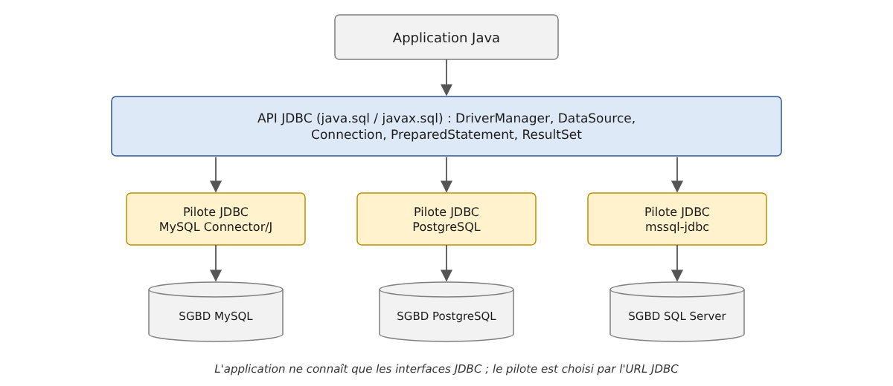
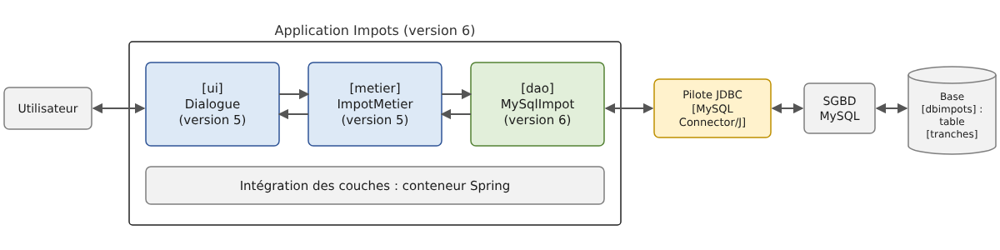

10. L'accès aux bases de données avec JDBC
Prérequis : la version 6 de l'application [Impots], présentée à la fin de ce chapitre, réutilise les modules [impots-dao], [impots-metier] et [impots-ui] de la version 5 (chapitre 6). Avant de construire ou d'ouvrir ses projets, il faut avoir installé la version 5 dans le dépôt Maven local par la commande [mvn install] tapée dans le dossier [06-architectures/ImpotsV5] (cf. chapitre 6, section sur [mvn install]).
10.1. Le pilote JDBC
Reprenons l'architecture en couches utilisée à diverses reprises depuis le chapitre 6. Jusqu'à présent, la couche [dao] de l'application [Impots] a exploité trois types de sources de données :
- des données placées « en dur » dans le code ([HardwiredImpot]) ;
- des données provenant d'un fichier texte ([FileImpot]) ;
- des données provenant d'un fichier JSON ([JsonImpot]).
Nous étudions dans ce chapitre le cas où les données proviennent d'une base de données. L'architecture devient la suivante :

Dans le schéma ci-dessus, la couche [dao] [1] dialogue avec le SGBD (Système de Gestion de Bases de Données) [3], qui gère la base de données [4], au travers d'une bibliothèque de classes propre au SGBD utilisé [2]. Cette bibliothèque implémente une API standard de la plateforme Java, JDBC (« Java DataBase Connectivity »), présente dans le JDK depuis sa version 1.1, en 1997. On l'appelle un pilote JDBC (« JDBC driver »). Tous les SGBD courants disposent d'un pilote JDBC, distribué sous la forme d'une archive [.jar].
JDBC est d'abord un ensemble d'interfaces, définies dans les paquetages [java.sql] et [javax.sql] du module [java.sql] du JDK : [Connection], [Statement], [PreparedStatement], [ResultSet], [DataSource]… Un pilote JDBC fournit des classes qui implémentent ces interfaces. Le code de l'application, lui, ne manipule que les interfaces : il ne contient pas, en général, le nom des classes du pilote. C'est une différence avec d'autres plateformes, où le code utilise souvent directement les classes propres à chaque SGBD ([MySqlConnection], [SqlConnection]…) : en Java, l'abstraction est la règle depuis l'origine, et changer de SGBD revient d'abord à changer de pilote et d'adresse de la base, comme nous le verrons. Il reste que chaque SGBD a son dialecte SQL : cette indépendance a des limites, que nous verrons aussi.
Nous utilisons un seul SGBD, MySQL 8, que l'annexe « Le SGBD MySQL avec Laragon » installe sous Windows, et son pilote JDBC officiel, MySQL Connector/J, dans sa version 9.7.0. Les bases sont créées par des scripts SQL exécutés avec le client en ligne de commande [mysql] ; l'annexe montre aussi comment les créer avec le client graphique HeidiSQL livré avec Laragon.
10.2. Les deux modes d'exploitation d'une source de données
Une base de données peut être exploitée de deux manières différentes :
- le mode connecté ;
- le mode déconnecté.
En mode connecté, l'application :
- ouvre une connexion avec la source de données ;
- travaille avec la source de données en lecture / écriture ;
- ferme la connexion.
En mode déconnecté, l'application :
- ouvre une connexion avec la source de données ;
- obtient une copie en mémoire de tout ou partie des données de la source ;
- ferme la connexion ;
- travaille avec la copie en mémoire des données, en lecture / écriture ;
- lorsque le travail est fini, ouvre une connexion, envoie les données modifiées à la source de données pour qu'elle les prenne en compte, et ferme la connexion.
Le mode connecté est celui de l'interface [ResultSet] de JDBC : les lignes du résultat d'une requête sont lues pendant que la connexion est ouverte. Le mode déconnecté est celui de l'interface [CachedRowSet] du paquetage [javax.sql.rowset] (Java 5) : une table en mémoire qui se remplit à partir d'une requête, se modifie hors connexion, puis renvoie ses modifications à la base. Ces « RowSet » sont toujours présents dans le JDK 25 mais ne sont plus guère utilisés dans les applications nouvelles : le travail sur une copie en mémoire des données, avec enregistrement ultérieur des modifications, est aujourd'hui confié à un ORM (« Object-Relational Mapper »), qui manipule des objets Java ordinaires plutôt que des lignes de tables. L'ORM le plus utilisé en Java, Hibernate, est l'objet du chapitre 11. Nous étudions donc surtout le mode connecté, sur lequel repose d'ailleurs Hibernate, et nous ne montrerons le mode déconnecté que par un exemple, en fin de chapitre.
10.3. Les concepts de base de l'exploitation d'une base de données
10.3.1. La base de données exemple
Nous allons exposer les principaux concepts de l'utilisation d'une base de données avec une base MySQL nommée [dbarticles]. Elle contient une seule table, [articles], dont chaque ligne décrit un article d'un magasin :
- [ID] : un identifiant unique de l'article, clé primaire de la table ;
- [NOM] : le nom de l'article, unique lui aussi ;
- [PRIX] : son prix ;
- [STOCKACTUEL] : son stock actuel ;
- [STOCKMINIMUM] : le stock minimum en deçà duquel il faut réapprovisionner l'article.
La base est créée par le script SQL [sql/dbarticles.sql] suivant :
- ligne 5 : le script est un fichier texte codé en UTF-8. [SET NAMES utf8mb4] l'indique au serveur, sans quoi les caractères accentués des lignes 31-36 pourraient être mal interprétés par le client [mysql] ;
- lignes 8-9 : la base est supprimée si elle existe, puis recréée. Le script peut ainsi être exécuté plusieurs fois pour remettre la base dans son état initial. [utf8mb4] est le codage Unicode complet de MySQL (le codage historique [utf8] de MySQL ne code que les caractères sur trois octets au plus) ;
- ligne 12 : [dbarticles] devient la base courante : les ordres SQL qui suivent s'exécuteront sur elle ;
- lignes 15-27 : la définition de la table [articles] :
- ligne 16 : la colonne [ID] est la clé primaire de la table ([PRIMARY KEY]). L'attribut [AUTO_INCREMENT], propre à MySQL, indique que sa valeur est générée par le SGBD lui-même lors de l'insertion d'une ligne : 1, 2, 3… Les autres SGBD ont des notions équivalentes, avec une autre syntaxe ([IDENTITY] pour SQL Server, [GENERATED … AS IDENTITY] pour PostgreSQL et Oracle) ;
- ligne 18 : le prix est un nombre décimal exact de 10 chiffres dont 2 après la virgule. On évite pour des montants les types à virgule flottante comme [DOUBLE] (cf. la différence entre [double] et [BigDecimal] au chapitre 3). Le type SQL [DECIMAL] correspond à la classe Java [BigDecimal] ;
- lignes 22-26 : des contraintes d'intégrité. [UNQ_NOM] interdit que deux articles aient le même nom ; les contraintes [CHECK] interdisent un nom vide, un prix négatif ou nul, un stock négatif. MySQL ignorait silencieusement les contraintes [CHECK] jusqu'à sa version 8.0.16 ; il les applique depuis ;
- lignes 30-36 : l'insertion de six lignes. La colonne [ID] n'est pas initialisée : c'est le SGBD qui lui donne une valeur.
On exécute le script avec le client en ligne de commande [mysql], dans le dossier [sql] (l'utilisateur [root] de MySQL n'a pas de mot de passe dans l'installation de l'annexe ; sinon on ajoute l'option [-p] et le client le demande) :
La commande n'affiche rien si tout se passe bien. On peut vérifier la structure et le contenu de la table avec le même client :
- ligne 1 : l'option [-t] demande un affichage en tableau, l'option [-e] donne les ordres SQL à exécuter, et l'option [--default-character-set=utf8mb4] fait afficher correctement les caractères accentués dans un terminal UTF-8 ;
- lignes 3-9 : la structure de la table, obtenue par l'ordre MySQL [describe] ;
- lignes 12-19 : le contenu de la table. Les valeurs de la colonne [ID] ont été générées par le SGBD.
Une remarque sur la casse des noms : les noms de colonnes ne distinguent jamais majuscules et minuscules ([nom] et [NOM] désignent la même colonne), mais les noms de tables sont des noms de fichiers du serveur. Ils ne distinguent pas majuscules et minuscules sous Windows et les distinguent sous Linux. Pour que les exemples fonctionnent partout, la table s'appelle [articles], en minuscules, et les requêtes l'écrivent ainsi.
Les programmes de ce chapitre modifient la table [articles]. Les résultats reproduits ont été obtenus en exécutant de nouveau le script [dbarticles.sql] avant chaque programme : le lecteur qui veut retrouver exactement les mêmes résultats fera de même.
Maintenant que nous avons une base de données, nous allons pouvoir l'exploiter. Auparavant, faisons quelques rappels de SQL.
10.3.2. Les quatre commandes de base du langage SQL
SQL (« Structured Query Language ») est un langage, partiellement normalisé, d'interrogation et de mise à jour des bases de données. Tous les SGBD respectent la partie normalisée de SQL mais ajoutent au langage des extensions propriétaires qui exploitent leurs particularités. Nous en avons déjà rencontré deux exemples : la génération automatique des clés primaires et les types autorisés pour les colonnes d'une table dépendent souvent du SGBD.
Les quatre commandes de base du langage SQL que nous présentons sont normalisées et acceptées par tous les SGBD :
Commande | Rôle |
[select col1, col2, … from table1, table2, … where condition order by expression] | La requête qui permet d'obtenir les données contenues dans une base. Seuls les mots clés [select] et [from] sont obligatoires. Une jointure est faite avec toutes les tables qui suivent le mot clé [from] ; seules les colonnes qui suivent le mot clé [select] sont conservées ; seules les lignes vérifiant la condition du mot clé [where] sont conservées ; les lignes résultantes, ordonnées selon l'expression du mot clé [order by], forment le résultat de la requête. Ce résultat est une table. |
[insert into table(col1, col2, …) values (val1, val2, …)] | Insère une ligne dans [table]. [(col1, col2, …)] précise les colonnes de la ligne à initialiser avec les valeurs [(val1, val2, …)]. |
[update table set col1=val1, col2=val2, … where condition] | Met à jour les lignes de [table] vérifiant [condition] (toutes les lignes s'il n'y a pas de [where]). Pour ces lignes, la colonne [coli] reçoit la valeur [vali]. |
[delete from table where condition] | Supprime toutes les lignes de [table] vérifiant [condition] (toutes les lignes s'il n'y a pas de [where]). |
Nous allons écrire une application console permettant d'émettre des ordres SQL sur la base [dbarticles]. Voici un exemple d'exécution. Le lecteur est invité à comprendre les ordres SQL émis et leurs résultats :
- ligne 2 : l'URL JDBC de la base et l'utilisateur MySQL : ce sont les paramètres qui permettent de se connecter à la base de données ;
- ligne 4 : on demande le contenu de la table [articles] ;
- ligne 17 : on insère une nouvelle ligne. On notera que la colonne [id] n'est pas initialisée dans cette opération car c'est le SGBD qui va générer sa valeur ;
- ligne 20 : vérification. Ligne 32, la ligne a bien été ajoutée, avec l'[id] 7. Avec [select *], les noms des colonnes sont ceux de la table, en majuscules ;
- ligne 34 : on augmente de 10 % le prix de l'article qui vient d'être ajouté ;
- ligne 43 : l'augmentation du prix a bien eu lieu ;
- ligne 45 : on supprime l'article ajouté précédemment ;
- ligne 48 : on vérifie qu'il ne reste plus que six articles ;
- ligne 56 : le programme n'accepte que les quatre ordres [select], [insert], [update] et [delete] ;
- ligne 60 : une erreur signalée par le SGBD : la table [article] n'existe pas ;
- ligne 63 : la contrainte d'unicité [UNQ_NOM] interdit d'ajouter un second article [vélo]. Les messages d'erreur de MySQL, comme ceux du pilote, sont en anglais.
10.3.3. Les interfaces de base de JDBC pour le mode connecté
Revenons au schéma d'une application exploitant une base de données au travers d'un pilote JDBC :
En mode connecté, l'application :
- ouvre une connexion avec la source de données ;
- travaille avec la source de données en lecture / écriture ;
- ferme la connexion.
Trois types d'objets sont principalement concernés par ces opérations :
- la connexion ([Connection]), qui encapsule les propriétés et méthodes de la liaison avec la base ;
- l'ordre SQL ([Statement], ou [PreparedStatement] pour un ordre paramétré), qui encapsule les propriétés et méthodes de l'ordre SQL exécuté ;
- le résultat ([ResultSet]), qui encapsule les propriétés et méthodes du résultat d'un ordre SQL [select].
Ce sont des interfaces du paquetage [java.sql]. Le pilote MySQL les implémente par des classes de ses propres paquetages ([com.mysql.cj.jdbc.ConnectionImpl], [ClientPreparedStatement], [ResultSetImpl]…), que l'application n'a pas à connaître : elle obtient ses objets par des méthodes qui rendent des interfaces. La connexion est obtenue de la classe [DriverManager] (ou d'une source de données [DataSource], que nous verrons plus loin), l'ordre SQL est créé par la connexion, le résultat est rendu par l'ordre SQL.
10.3.3.1. L'interface Connection
Elle sert à gérer la connexion avec la base de données. Une connexion est obtenue par la méthode statique [DriverManager.getConnection(url, utilisateur, motDePasse)], qui reçoit l'URL JDBC de la base, par exemple [jdbc:mysql://localhost:3306/dbarticles], et les identifiants de l'utilisateur. La connexion rendue est déjà ouverte. Les méthodes de l'interface [Connection] que nous utiliserons sont les suivantes :
Méthode | Rôle |
[createStatement] | crée un ordre SQL [Statement] associé à cette connexion. |
[prepareStatement] | [prepareStatement(sql)] crée un ordre SQL paramétré [PreparedStatement] associé à cette connexion. |
[prepareCall] | [prepareCall("{call nom(?, ?)}")] crée un ordre [CallableStatement] qui exécute une procédure stockée dans la base. |
[setAutoCommit] | [setAutoCommit(false)] démarre une transaction (voir plus loin). |
[commit], [rollback] | valide, annule la transaction en cours. |
[getMetaData] | rend un objet [DatabaseMetaData] qui décrit le SGBD et le pilote. |
[isValid] | [isValid(secondes)] vérifie que la connexion est toujours utilisable. |
[close] | ferme la connexion, ainsi que les ordres SQL et les résultats qu'elle a créés. |
L'ouverture d'une connexion a la forme suivante (les schémas de code de ce paragraphe sont extraits de la classe [Modeles] du projet, qui compile mais n'est pas exécutée) :
10.3.3.2. L'interface Statement
Elle sert à exécuter un ordre SQL. Les méthodes de cette interface que nous utiliserons sont les suivantes :
Méthode | Rôle |
[executeQuery] | [executeQuery(sql)] exécute un ordre SQL [select]. On obtient un objet [ResultSet] représentant le résultat du [select]. |
[executeUpdate] | [executeUpdate(sql)] exécute un ordre SQL [update], [insert], [delete] (ou un ordre de définition comme [create table]). On obtient le nombre de lignes affectées par l'opération (mises à jour, insérées, supprimées). [executeLargeUpdate] (Java 8) rend ce nombre sous la forme d'un [long]. |
[execute] | [execute(sql)] exécute un ordre SQL quelconque. Rend [true] si l'ordre a produit un [ResultSet], obtenu ensuite par [getResultSet], [false] s'il a produit un nombre de lignes, obtenu par [getUpdateCount]. |
[addBatch], [executeBatch] | ajoutent un ordre à un lot, exécutent le lot (voir plus loin). |
[getGeneratedKeys] | rend les clés primaires générées par le SGBD lors d'un [insert]. |
[setQueryTimeout] | [setQueryTimeout(secondes)] fixe la durée maximale d'exécution de l'ordre. |
[close] | ferme l'ordre SQL, ainsi que son [ResultSet]. |
L'interface [PreparedStatement] dérive de [Statement] : c'est un ordre SQL paramétré, dont le texte est fixé à sa création et dont les paramètres reçoivent leur valeur par des méthodes [setXxx]. Nous l'étudierons au paragraphe « Les requêtes paramétrées ». L'exécution d'ordres SQL sans transaction a la forme suivante :
10.3.3.3. L'interface ResultSet
Elle encapsule les résultats d'un ordre SQL [select]. Un objet [ResultSet] représente une table avec des lignes et des colonnes, que l'on exploite séquentiellement : d'abord la première ligne, puis la deuxième, etc., sans retour en arrière possible (c'est le type par défaut [TYPE_FORWARD_ONLY] ; JDBC connaît aussi des résultats que l'on peut parcourir dans les deux sens, mais on les utilise rarement). Le [ResultSet] a un curseur placé initialement avant la première ligne : il faut appeler [next] pour lire la première ligne. Les méthodes de cette interface que nous utiliserons sont les suivantes :
Méthode | Rôle |
[next] | passe à la ligne suivante de la table résultat. Rend [true] si la lecture a pu se faire, [false] s'il n'y a plus de ligne. |
[getInt] | [getInt(i)] rend la valeur entière de la colonne n° i de la ligne courante. Les colonnes sont numérotées à partir de 1, et non de 0. [getInt("nom")] rend la valeur de la colonne de nom [nom]. Les autres méthodes analogues sont [getBoolean], [getBigDecimal], [getDouble], [getLong], [getString]… |
[getObject] | [getObject(i)] rend la valeur de la colonne n° i sous la forme d'un [Object], du type choisi par le pilote ; [getObject(i, LocalDate.class)] (Java 7) la rend dans le type demandé. |
[wasNull] | rend [true] si la dernière colonne lue n'avait pas de valeur, ce qui est symbolisé par la valeur SQL [NULL]. Les méthodes qui rendent un objet ([getString], [getBigDecimal], [getObject]…) rendent alors [null] ; celles qui rendent un type primitif ([getInt], [getDouble]…) rendent 0 : seul [wasNull] permet de distinguer le 0 du [NULL]. |
[getMetaData] | rend un objet [ResultSetMetaData] qui décrit les colonnes du résultat : [getColumnCount] (le nombre de colonnes), [getColumnLabel(i)] (le nom de la colonne n° i), [getColumnTypeName(i)] (son type SQL)… |
[close] | ferme le résultat. |
L'exploitation d'un objet [ResultSet] ressemble souvent à ce qui suit :
Avec MySQL Connector/J, les lignes du résultat sont par défaut toutes transférées du serveur vers la mémoire de l'application dès l'exécution de la requête ; [next] les parcourt ensuite. Pour un résultat de plusieurs millions de lignes, on peut demander au pilote de les recevoir au fur et à mesure de leur lecture (paramètre [useCursorFetch=true] de l'URL et [setFetchSize(n)] sur l'ordre SQL) : c'est un réglage propre au pilote, que nous n'utiliserons pas.
10.3.4. La gestion des erreurs
La couche [dao] peut rencontrer de nombreuses erreurs lors de l'exploitation de la base de données : serveur arrêté, base inexistante, mot de passe incorrect, erreur de syntaxe SQL, violation d'une contrainte d'intégrité… Celles-ci sont remontées sous la forme d'exceptions [SQLException]. [SQLException] est une exception contrôlée (chapitre 3) : toutes les méthodes de JDBC la déclarent dans leur clause [throws], et le compilateur oblige le code qui les appelle à l'intercepter ou à la déclarer à son tour. Le code de la couche [dao] doit gérer ces erreurs et, quoi qu'il arrive, libérer les ressources qu'il a obtenues : la connexion, l'ordre SQL et le résultat doivent être fermés. Avant Java 7, le code vu plus haut pour exploiter le résultat d'un ordre [select] devenait le suivant :
Ce code est lourd : la fermeture de la connexion peut elle-même lancer une [SQLException] (ligne 24), qu'il faut intercepter dans la clause [finally]. Depuis Java 7, l'instruction try-with-resources (chapitre 3) automatise ces fermetures : les objets [Connection], [Statement] et [ResultSet] implémentent l'interface [AutoCloseable], et les ressources déclarées entre les parenthèses du [try] sont fermées à la sortie du bloc, quelle que soit la façon dont on en sort :
- lignes 2-4 : trois ressources sont déclarées, séparées par des points-virgules. Chacune peut utiliser les précédentes. Elles sont fermées dans l'ordre inverse de leur déclaration : le résultat, puis l'ordre SQL, puis la connexion. Une exception lancée par une fermeture n'efface pas celle qui a éventuellement provoqué la sortie du bloc : elle lui est attachée comme exception « supprimée » ([getSuppressed]) ;
- ligne 9 : la clause [catch] intercepte aussi bien les erreurs de connexion et d'exécution que celles des fermetures.
L'intérêt de try-with-resources n'est pas seulement l'économie de lignes : il évite au développeur de fermer lui-même la connexion. Or l'oubli de la fermeture d'une connexion peut passer inaperçu et « planter » l'application d'une façon qui paraîtra aléatoire, chaque fois que le SGBD (ou le pool de connexions, que nous verrons) atteindra le nombre maximal de connexions ouvertes qu'il peut supporter. Dans la suite du cours, toute ressource JDBC est ouverte dans un try-with-resources.
La classe [SQLException] donne trois informations sur l'erreur :
- [getMessage] : le message d'erreur ;
- [getErrorCode] : le code d'erreur propre au SGBD (le numéro d'erreur MySQL : 1049, 1062…) ;
- [getSQLState] : un code d'erreur de cinq caractères défini par la norme SQL (« SQLSTATE »), commun à tous les SGBD pour les erreurs les plus courantes : la classe [42] désigne une erreur de syntaxe ou d'accès, [23] une violation de contrainte d'intégrité, [08] une erreur de connexion…
Depuis Java 6 (JDBC 4.0), [SQLException] a aussi des classes dérivées standard, que les pilotes lancent selon la nature de l'erreur. Les principales sont les suivantes :
Classe | Erreur |
[SQLSyntaxErrorException] | erreur de syntaxe SQL, table ou base inexistante, droits insuffisants (SQLSTATE de classe 42) |
[SQLIntegrityConstraintViolationException] | violation d'une contrainte d'intégrité : clé en double, clé étrangère, colonne [NOT NULL] (SQLSTATE de classe 23) |
[SQLDataException] | donnée incorrecte : valeur trop grande, conversion impossible (SQLSTATE de classe 22) |
[SQLTimeoutException] | délai d'exécution dépassé ([setQueryTimeout]) |
[SQLTransactionRollbackException] | transaction annulée par le SGBD, par exemple à la suite d'un interblocage (« deadlock ») |
[SQLNonTransientConnectionException], [SQLRecoverableException] | problème de connexion |
Le programme [Jdbc02.java] provoque diverses erreurs et les affiche :
Résultats :
- lignes 13-15 : les paramètres de connexion à la base, écrits en tête du programme ;
- ligne 18 : le numéro de l'erreur MySQL « Duplicate entry », sous le nom que lui donne la documentation de MySQL ;
- lignes 22-30 : six opérations qui échouent : base inexistante ; serveur injoignable (aucun serveur MySQL n'écoute sur le port 3399, ce qui produit la même erreur qu'un serveur arrêté) ; erreur de syntaxe ; table inexistante ; nom d'article en double ; prix négatif. Le paramètre [connectTimeout=5000] de l'URL de la ligne 23 limite à 5 secondes (5000 ms) l'attente de la connexion ;
- ligne 34 : la méthode [executer] exécute l'ordre SQL [requete] sur la base désignée par l'URL [url] ;
- lignes 36-37 : la connexion et l'ordre SQL sont ouverts dans un try-with-resources ;
- ligne 38 : la méthode [execute] exécute un ordre SQL quelconque : [select] ou [insert] ;
- ligne 41 : un [switch] sur l'exception, avec des motifs de type (Java 21, chapitre 3) ;
- ligne 43 : un motif gardé ([when]) permet de traiter à part une erreur précise : une violation de contrainte d'intégrité ([SQLIntegrityConstraintViolationException]) dont le code MySQL est 1062, c'est-à-dire une clé en double. Une application afficherait dans ce cas un message compréhensible par l'utilisateur ;
- lignes 46-50 : les autres erreurs. On affiche la classe de l'exception, le code d'erreur MySQL et le code SQLSTATE, puis la première ligne du message ([lines], Java 11, découpe une chaîne en lignes) : certains messages du pilote occupent plusieurs lignes.
Les résultats montrent que le pilote MySQL utilise les classes standard : [SQLSyntaxErrorException] pour une base inexistante (1049), une erreur de syntaxe (1064) ou une table inexistante (1146), toutes de SQLSTATE [42xxx]. Le serveur injoignable produit une [CommunicationsException], une classe du pilote (dérivée de [SQLRecoverableException]) : il n'y a pas de code d'erreur MySQL, puisque le serveur n'a pas répondu, mais le SQLSTATE [08S01] indique un échec de la liaison. La violation d'une contrainte [CHECK] (erreur 3819) est une simple [SQLException], de SQLSTATE [HY000] (« erreur générale ») : MySQL ne lui attribue pas de SQLSTATE de classe 23. On ne peut donc pas se fier entièrement aux classes dérivées : le code d'erreur et le SQLSTATE restent utiles.
Une couche [dao] qui veut rester indépendante du SGBD n'utilise que les classes standard et le SQLSTATE ; les codes d'erreur ([getErrorCode]) sont propres à chaque SGBD.
10.3.5. Configuration du projet exemple
Le pilote JDBC de MySQL est une bibliothèque publiée sur Maven Central, le dépôt central de Maven (chapitre 2). Les programmes de ce chapitre forment un projet Maven, [jdbc], placé dans le dossier [10-jdbc/jdbc] :
Son fichier [pom.xml] est le suivant :
- lignes 8-10 : les coordonnées du projet ;
- lignes 13-14 : la version de Java et le codage des fichiers source, comme dans tous les projets du cours ;
- ligne 16 : la propriété [exec.mainClass] désigne la classe exécutée par [mvn exec:java] (ligne 59). Sa valeur par défaut est [jdbc.Jdbc01] ; on exécute un autre programme en redéfinissant la propriété sur la ligne de commande : [mvn -q compile exec:java -Dexec.mainClass=jdbc.Jdbc02] ;
- lignes 21-25 : le pilote JDBC de MySQL, MySQL Connector/J, de coordonnées [com.mysql:mysql-connector-j]. Jusqu'à sa version 8.0.30, il était publié sous les coordonnées [mysql:mysql-connector-java], que l'on rencontre encore dans de nombreux projets ;
- lignes 27-31 : le pool de connexions HikariCP, que nous utiliserons à partir du programme [Jdbc03] ;
- lignes 33-37 : HikariCP écrit ses messages de journalisation au travers de l'API SLF4J (« Simple Logging Facade for Java »), qui a besoin d'une implémentation : nous utilisons Logback. Sans elle, SLF4J afficherait un avertissement au démarrage. Le fichier [src/main/resources/logback.xml], présenté plus bas, n'affiche que les avertissements et les erreurs ;
- lignes 42-52 : le compilateur, configuré comme dans tous les projets du cours : noms des paramètres conservés dans les classes compilées ([parameters]) et tous les avertissements activés ([-Xlint:all]) ;
- lignes 54-61 : le plugin [exec-maven-plugin], qui exécute la classe désignée par la propriété [exec.mainClass].
Le fichier de configuration de Logback est le suivant :
- lignes 4-8 : les messages sont écrits sur la console, sous la forme « niveau classe - message » ;
- ligne 9 : seuls les messages de niveau [WARN] (avertissement) ou [ERROR] sont affichés. Avec le niveau [INFO], on verrait les messages de démarrage et d'arrêt du pool de HikariCP.
Il existe deux pilotes JDBC courants pour MySQL :
- [com.mysql:mysql-connector-j] (« Connector/J »), publié par Oracle, propriétaire de MySQL, sous licence GPL v2 avec une exception (« Universal FOSS Exception ») qui permet de l'associer à des logiciels distribués sous d'autres licences libres ; une licence commerciale couvre les autres cas. C'est le pilote officiel, que nous utilisons ;
- [org.mariadb.jdbc:mariadb-java-client], le pilote de MariaDB (une variante libre de MySQL), sous licence LGPL, qui fonctionne aussi avec MySQL.
Les deux pilotes implémentent les mêmes interfaces JDBC : passer de l'un à l'autre ne demande que de changer la dépendance du [pom.xml] et le début de l'URL ([jdbc:mariadb:] au lieu de [jdbc:mysql:]).
Une remarque historique : jusqu'à Java 5, il fallait charger la classe du pilote avant d'ouvrir une connexion, par une instruction comme [Class.forName("com.mysql.jdbc.Driver")], que l'on trouve encore dans de nombreux exemples sur Internet. Depuis Java 6 (JDBC 4.0), c'est inutile : chaque archive de pilote déclare sa classe dans un fichier [META-INF/services/java.sql.Driver], et [DriverManager] charge automatiquement, par le mécanisme des services ([ServiceLoader]), tous les pilotes présents dans le classpath.
Les paramètres de connexion ne doivent pas être écrits dans le code d'une application réelle : ils dépendent de la machine sur laquelle l'application est installée. Le premier programme du chapitre les lit dans un fichier de propriétés (chapitre 6), [dbarticles.properties], placé dans le dossier du projet :
- ligne 2 : l'URL JDBC de la base. Une URL JDBC a la forme [jdbc:sous-protocole:détails]. Le sous-protocole désigne le pilote ([mysql]) et les détails, dont la forme dépend du pilote, désignent la base. Pour MySQL, ce sont :
- [//localhost] : le nom de la machine sur laquelle se trouve le SGBD MySQL, ici [localhost], c'est-à-dire la machine sur laquelle s'exécute le programme ;
- [:3306] : le port sur lequel le serveur MySQL attend les connexions, 3306 par défaut ;
- [/dbarticles] : le nom de la base de données ;
- des paramètres facultatifs du pilote peuvent suivre, après un point d'interrogation, sous la forme [?param1=valeur1¶m2=valeur2]. Nous rencontrerons [connectTimeout], [rewriteBatchedStatements] et [allowMultiQueries] ;
- ligne 3 : l'utilisateur MySQL, ici [root], l'administrateur du SGBD ;
- ligne 4 : son mot de passe, vide ici.
La documentation de Connector/J donne la liste complète des paramètres de l'URL : Connector/J Configuration Properties.
Les autres programmes du chapitre, plus courts, écrivent leurs paramètres de connexion dans des constantes en tête du programme, comme [Jdbc02.java] : c'est plus simple pour des exemples, à ne pas faire dans une application.
Pour exécuter les programmes, on se place dans le dossier [jdbc] et on tape :
La première commande exécute [Jdbc01], la seconde [Jdbc02]. L'option [-q] (« quiet ») supprime les messages de Maven : seule reste la sortie du programme. On peut aussi, bien sûr, exécuter les programmes depuis l'IDE. Dans la suite, nous ne reproduisons que la sortie des programmes.
10.3.6. Le programme exemple
Le programme [Jdbc01.java] dont nous avons vu un exemple d'exécution est le suivant (programme principal) :
- lignes 7-12 : les interfaces JDBC utilisées, toutes du paquetage [java.sql]. Le programme ne contient le nom d'aucune classe du pilote MySQL : seule l'URL JDBC, lue dans la configuration, désigne MySQL ;
- ligne 21 : les quatre ordres SQL acceptés, dans un ensemble non modifiable créé par [Set.of] (Java 9, chapitre 5) ;
- ligne 23 : la méthode [main]. Comme dans les autres projets Maven du cours, elle a sa forme classique [public static void main(String[] args)], que reconnaissent tous les outils ;
- lignes 25-31 : la lecture du fichier [dbarticles.properties], comme au chapitre 6. Le fichier est cherché dans le dossier courant, celui à partir duquel on lance le programme : c'est le dossier du projet lorsqu'on tape [mvn exec:java] ;
- lignes 32-38 : les trois paramètres de connexion. [getProperty(clé, défaut)] rend une valeur par défaut si la clé est absente ; l'URL, elle, est obligatoire ;
- ligne 44 : la boucle de saisie des ordres SQL tapés au clavier et de leur exécution sur la base de données ;
- ligne 46 : [IO.readln] (Java 25) affiche l'invite et lit une ligne tapée au clavier. Elle rend [null] si l'entrée standard est fermée ;
- ligne 53 : le premier mot de la requête, obtenu en découpant la requête sur les espaces (expression régulière [\s+], chapitre 5). Il est mis en minuscules pour la comparaison, mais la requête elle-même n'est pas modifiée : la mettre tout entière en minuscules empêcherait d'insérer un article nommé « Vélo » ;
- lignes 54-58 : si la requête est invalide, un message d'erreur est affiché et on passe à la requête suivante ;
- lignes 60-64 : l'exécution de l'ordre SQL saisi. Elle prend une forme différente selon qu'il s'agit d'un ordre [select] ou d'un ordre [insert], [update], [delete] : dans le premier cas, l'ordre ramène des données de la base sans la modifier ; dans le second, il met la base à jour sans ramener de données. Dans les deux cas, l'exécution est déléguée à une méthode qui reçoit les paramètres de connexion et l'ordre SQL à exécuter.
10.3.7. Exécution d'une requête SELECT
L'exécution d'ordres SQL comporte les étapes suivantes :
- connexion à la base de données ;
- émission des ordres SQL vers la base ;
- traitement des résultats des ordres SQL ;
- fermeture de la connexion.
Les étapes 2 et 3 peuvent être répétées, la fermeture de la connexion n'ayant lieu qu'à la fin de l'exploitation de la base. Les connexions ouvertes sont des ressources limitées d'un SGBD : il faut les économiser, et l'on cherche toujours à limiter la durée de vie d'une connexion ouverte. Dans notre programme, la connexion est fermée après chaque ordre SQL, et une nouvelle connexion est ouverte pour l'ordre suivant.
L'ouverture d'une connexion est pourtant coûteuse : il faut établir une connexion réseau avec le serveur, négocier éventuellement un chiffrement, s'authentifier. [DriverManager] ne fait rien pour diminuer ce coût : chaque appel à [getConnection] ouvre une nouvelle connexion réseau, et chaque [close] la ferme réellement. Pour un outil interactif comme celui-ci, ce n'est pas gênant. Une application qui exécute de nombreux ordres SQL, un serveur web par exemple, utilise au contraire un pool de connexions : lorsque l'application ferme une connexion, le pool ne la ferme pas réellement mais la remet dans un réservoir (le pool) ; lorsque l'application demande une nouvelle connexion, elle reçoit l'une des connexions du pool, déjà établie. L'intérêt de ce système est qu'il est transparent pour le développeur : le code qui ouvre et ferme ses connexions par un try-with-resources n'a pas à être modifié. Nous verrons au paragraphe « Les sources de données et les pools de connexions » comment l'utiliser. Ouvrir une connexion au début de chaque opération et la fermer à la fin est donc la bonne pratique.
Nous nous intéressons tout d'abord à l'exécution des ordres SQL [select]. La méthode [executeSelect] de notre programme exemple et la méthode [afficherResultSet] qu'elle utilise sont les suivantes :
- ligne 2 : la méthode reçoit les paramètres de connexion et l'ordre SQL [select] [requete] à exécuter ;
- lignes 4-6 : un try-with-resources ouvre trois ressources :
- ligne 4 : la connexion avec la base, obtenue de [DriverManager]. [DriverManager] interroge chacun des pilotes du classpath : le premier qui reconnaît l'URL ouvre la connexion. C'est à ce moment que les paramètres de connexion sont utilisés, et que se produisent les erreurs de connexion. La connexion est du type de l'interface [Connection] : le code ne sait pas qu'il s'agit d'un objet du pilote MySQL ;
- ligne 5 : l'ordre SQL, un objet [Statement] créé par la connexion. Le même type d'objet sert à exécuter un ordre [select] et un ordre [update], [insert], [delete] ;
- ligne 6 : l'ordre [select] est exécuté par la méthode [executeQuery], qui rend un objet [ResultSet] ;
- ligne 8 : l'affichage des résultats est confié à la méthode [afficherResultSet] ;
- lignes 9-11 : toute opération avec une base de données peut lancer une [SQLException]. C'est d'autant plus probable ici que les ordres SQL donnés par l'utilisateur peuvent être syntaxiquement erronés. Il faut qu'on puisse le lui dire : l'exception est interceptée et son message affiché. À la sortie du [try], que ce soit normalement ou par une exception, le résultat, l'ordre SQL et la connexion ont été fermés ;
- ligne 15 : la méthode reçoit un objet [ResultSet]. Elle déclare l'exception contrôlée [SQLException] que peuvent lancer les méthodes du [ResultSet] : c'est la méthode appelante qui la gère ;
- lignes 17-25 : on affiche les noms des colonnes de la table résultat du [select]. Ce sont les colonnes [coli] de la requête [select col1, col2, … from table …]. Ils sont donnés par les métadonnées du résultat, un objet [ResultSetMetaData] (ligne 17) : [getColumnCount] rend le nombre de colonnes et [getColumnLabel(i)] le nom de la colonne n° i, ou son alias si la requête en donne un ([select count(*) as nombre …]). On notera la boucle des lignes 20-22 : les colonnes sont numérotées à partir de 1, le tableau [noms] à partir de 0. [String.join] assemble les noms en les séparant par des virgules, et ["-".repeat(n)] (Java 11) produit une chaîne de n tirets ;
- lignes 27-33 : on parcourt la table résultat et on affiche les valeurs de chaque ligne ;
- ligne 30 : on ne connaît pas le type de la colonne n° i du résultat parce qu'on ne connaît pas la requête tapée par l'utilisateur. On ne peut donc pas utiliser la syntaxe [resultat.getXxx(i)], où [Xxx] est le type de la colonne. On utilise alors [getObject(i)], qui rend la valeur sous la forme d'un [Object] ; [StringBuilder.append(Object)] l'ajoute au moyen de sa méthode [toString]. Pour la colonne [prix], de type SQL [DECIMAL(10,2)], l'objet est un [BigDecimal] de deux décimales, que sa méthode [toString] affiche avec un point décimal ([500.00]) : contrairement à [String.format], [toString] ne dépend pas de la langue du poste. Un affichage « à la française » utiliserait [String.format("%.2f", prix)] ou la classe [NumberFormat] (chapitre 5).
10.3.8. Exécution d'un ordre de mise à jour : INSERT, UPDATE, DELETE
Le code de la méthode [executeUpdate] est le suivant :
L'exécution d'un ordre de mise à jour ne diffère de celle d'un ordre [select] que par la méthode de l'ordre SQL utilisée : [executeQuery] pour [select], [executeUpdate] pour [update], [insert], [delete] :
- lignes 3-4 : il n'y a cette fois que deux ressources : la connexion et l'ordre SQL ;
- ligne 6 : l'ordre [update], [insert] ou [delete] est exécuté par la méthode [executeUpdate]. Si elle réussit, cette méthode rend le nombre de lignes mises à jour ([update]), insérées ([insert]) ou supprimées ([delete]) ;
- ligne 8 : ce nombre de lignes est affiché.
Le lecteur est invité à revoir l'exemple d'exécution donné au paragraphe « Les quatre commandes de base du langage SQL ».
10.4. JDBC et l'indépendance vis-à-vis du SGBD
10.4.1. Les pilotes JDBC actuels
Le code que nous avons étudié ne contient le nom d'aucune classe du pilote MySQL : il n'utilise que les interfaces de [java.sql]. Pour le faire travailler avec un autre SGBD, il suffit en principe d'ajouter au projet le pilote de ce SGBD et de changer l'URL JDBC. Voici les principaux pilotes JDBC d'aujourd'hui, tous publiés sur Maven Central :
SGBD | Dépendance Maven | URL JDBC | Remarques |
MySQL | [com.mysql:mysql-connector-j] | [jdbc:mysql://hôte:3306/base] | le pilote officiel, utilisé dans ce cours |
MariaDB, MySQL | [org.mariadb.jdbc:mariadb-java-client] | [jdbc:mariadb://hôte:3306/base] | |
PostgreSQL | [org.postgresql:postgresql] | [jdbc:postgresql://hôte:5432/base] | |
SQL Server, Azure SQL | [com.microsoft.sqlserver:mssql-jdbc] | [jdbc:sqlserver://hôte:1433;databaseName=base] | le pilote de Microsoft |
Oracle | [com.oracle.database.jdbc:ojdbc11] | [jdbc:oracle:thin:@//hôte:1521/service] | |
H2 | [com.h2database:h2] | [jdbc:h2:mem:base] ou [jdbc:h2:./fichier] | un SGBD écrit en Java, embarqué dans l'application : base en mémoire ou dans un fichier, sans serveur ; très utilisé pour les tests |
SQLite | [org.xerial:sqlite-jdbc] | [jdbc:sqlite:fichier.db] | une base dans un fichier, sans serveur |
On remarquera que la forme de l'URL, après [jdbc:], est propre à chaque pilote.
L'architecture est la suivante :

L'application ne connaît que les interfaces de JDBC. Les objets concrets sont créés par le pilote, que [DriverManager] choisit d'après l'URL : chaque pilote présent dans le classpath déclare sa classe principale, une implémentation de l'interface [java.sql.Driver], dont la méthode [connect(url, propriétés)] rend [null] si l'URL ne lui est pas destinée ([acceptsURL(url)] permet aussi de le lui demander). Le programme [Jdbc03.java] le montre. Il reçoit en argument l'URL JDBC de la base :
Résultats avec l'URL de MySQL (valeur par défaut) :
Résultats avec l'URL d'une base PostgreSQL, dont le pilote n'est pas dans le classpath :
Nous commentons ici la première partie du programme (lignes 1-39 et 59-73) ; la seconde est étudiée au paragraphe suivant :
- ligne 20 : l'URL JDBC de la base, passée en argument, celle de la base MySQL [dbarticles] par défaut. Avec Maven, l'argument est passé par la propriété [exec.args] ;
- lignes 23-25 : [DriverManager.drivers] (Java 9) rend un flux ([Stream], chapitre 5) des pilotes chargés. Un seul pilote est présent dans le classpath : celui de MySQL, de classe [com.mysql.cj.jdbc.Driver], en version 9.7 (ligne 3 des résultats) ;
- ligne 28 : [DriverManager] cherche un pilote qui accepte l'URL. Si aucun ne l'accepte, [getConnection] lance une [SQLException] « No suitable driver found » (ligne 4 des seconds résultats). C'est l'erreur qu'on obtient lorsqu'on a oublié la dépendance du pilote dans le [pom.xml], ou fait une faute de frappe dans l'URL ;
- lignes 29-34 : les métadonnées de la connexion, un objet [DatabaseMetaData], décrivent le SGBD (nom, version), le pilote et la version de JDBC qu'il implémente : JDBC 4.2, la version de Java 8. Le JDK 25 définit JDBC 4.3 (Java 9), dont les ajouts sont mineurs ; [DatabaseMetaData] décrit aussi les possibilités du SGBD (transactions, lots…), ses tables et leurs colonnes ;
- ligne 35 : l'exécution d'une requête paramétrée par la méthode [afficherArticles] ;
- lignes 61-63 : la requête a un paramètre, noté [?], qui reçoit sa valeur par [setInt(1, 200)]. Les requêtes paramétrées sont étudiées plus loin ;
- lignes 65-66 : les résultats montrent que les objets manipulés au travers des interfaces sont des objets du pilote MySQL : [ConnectionImpl], [ClientPreparedStatement], [ResultSetImpl] (ligne 6 des résultats) ;
- lignes 67-70 : le type des colonnes étant connu, on utilise les méthodes [getInt], [getString], [getBigDecimal], qui rendent directement une valeur du type attendu.
Pour que ce programme fonctionne avec PostgreSQL, il suffirait d'ajouter au [pom.xml] la dépendance [org.postgresql:postgresql] et de créer la base [dbarticles] dans PostgreSQL : [DriverManager] trouverait alors deux pilotes et choisirait celui de PostgreSQL pour une URL [jdbc:postgresql:…]. Seul MySQL est installé sur la machine qui a servi à écrire ce cours : nous ne l'avons pas fait.
10.4.2. Les sources de données et les pools de connexions
[DriverManager] est la façon historique d'obtenir une connexion. Depuis JDBC 2.0, on lui préfère dans les applications une source de données, un objet qui implémente l'interface [javax.sql.DataSource]. Une source de données est configurée une fois pour toutes (URL, utilisateur, mot de passe, réglages du pilote) et fournit ensuite des connexions par sa méthode [getConnection()], sans paramètres. Le code qui utilise la source de données ne connaît ni l'URL ni les identifiants : dans une application, c'est elle que l'on enregistre dans le conteneur d'injection de dépendances (chapitre 6), plutôt que les paramètres de connexion. Il existe deux grandes familles de sources de données :
- celles fournies par les pilotes, comme [com.mysql.cj.jdbc.MysqlDataSource] pour MySQL. Comme [DriverManager], elles ouvrent une nouvelle connexion réseau à chaque appel de [getConnection] ;
- celles qui gèrent un pool de connexions. La plus utilisée est HikariCP, le pool par défaut de Spring Boot. Son [getConnection] rend une connexion du pool, et le [close] de cette connexion la remet dans le pool au lieu de la fermer.
La seconde partie du programme [Jdbc03] compare les deux (lignes 41-56 et 75-90 du programme ci-dessus) :
- lignes 42-45 : une source de données [MysqlDataSource], configurée par ses méthodes [setURL], [setUser], [setPassword]. C'est la seule partie du programme qui nomme une classe du pilote MySQL ;
- ligne 46 : la méthode [mesurer] reçoit la source de données sous le type de l'interface [DataSource] : elle conviendrait à n'importe quel pilote ;
- lignes 49-53 : un objet [HikariConfig] réunit la configuration du pool : URL JDBC, identifiants et taille maximale du pool (5 connexions ; la valeur par défaut est 10). HikariCP utilise [DriverManager] pour ouvrir ses connexions : il fonctionne avec n'importe quel pilote JDBC ;
- ligne 54 : la source de données [HikariDataSource] est créée à partir de cette configuration. Elle ouvre aussitôt ses premières connexions. Comme elle détient des connexions ouvertes, il faut la fermer à la fin du programme, ce que fait ici le try-with-resources ;
- lignes 76-90 : la méthode [mesurer] demande 100 fois une connexion à la source de données et la ferme aussitôt, en mesurant le temps total avec [System.nanoTime]. Le résultat est éloquent (lignes 10-11 des premiers résultats) : sans pool, l'ouverture d'une connexion demande environ 50 ms, pour la connexion réseau et l'authentification ; avec le pool, la connexion est obtenue en une fraction de milliseconde. Les durées dépendent de la machine, mais le rapport reste de cet ordre ;
- ligne 82 : avec HikariCP, la connexion rendue est un objet [HikariProxyConnection] : un « mandataire » (« proxy ») qui enveloppe la connexion du pilote et dont la méthode [close] la rend au pool.
Une application qui sert de nombreux utilisateurs utilise donc toujours un pool de connexions. Nous en reverrons un usage au paragraphe sur les threads virtuels.
10.4.3. Quel niveau d'abstraction choisir ?
L'indépendance de JDBC vis-à-vis du SGBD semble idéale. Dans la pratique, JDBC n'arrive pas à cacher toutes les particularités d'un SGBD :
- le SQL lui-même diffère d'un SGBD à l'autre dès qu'on sort des ordres de base : génération des clés primaires, limitation du nombre de lignes rendues ([limit 10] pour MySQL et PostgreSQL, [top 10] ou [offset … fetch] pour SQL Server), types des colonnes, fonctions de dates, etc. ;
- les types Java rendus par [getObject] peuvent varier : nous verrons que le [count(*)] de MySQL rend un [Long] ;
- les codes d'erreur ([getErrorCode]) sont propres à chaque SGBD, et les SQLSTATE ne sont pas toujours utilisés de la même façon ;
- les URL et les paramètres de réglage sont propres à chaque pilote.
Les paramètres des requêtes, en revanche, sont uniformes : JDBC impose la notation [?] (des paramètres positionnels, sans nom), que chaque pilote traduit dans la syntaxe de son SGBD.
Pour s'affranchir de ces limites ou alléger l'écriture du code JDBC, on utilise aujourd'hui principalement :
- un ORM, le plus souvent Hibernate, présenté au chapitre 11 : la couche [dao] manipule des objets Java et écrit ses requêtes en HQL, un langage de requêtes objet ; c'est Hibernate qui génère le SQL propre à chaque SGBD (son « dialecte ») ;
- des bibliothèques qui gardent le SQL mais suppriment le code répétitif de JDBC : [JdbcTemplate] et [JdbcClient] de Spring (ce dernier depuis Spring Framework 6.1), qui transforment directement les lignes d'un [select] en objets Java et convertissent les [SQLException] en exceptions non contrôlées ; jOOQ, qui construit les requêtes SQL en Java avec vérification par le compilateur ; MyBatis, qui associe des requêtes SQL écrites dans des fichiers XML ou des annotations à des méthodes Java.
Ces outils s'appuient tous sur JDBC : comprendre JDBC reste utile pour comprendre ce qu'ils font et diagnostiquer leurs problèmes.
10.5. Les requêtes paramétrées
10.5.1. Le principe
Une requête paramétrée est un ordre SQL dont certaines valeurs sont remplacées par des paramètres, dont les valeurs sont fournies séparément du texte de la requête. Avec JDBC, un paramètre est noté par un point d'interrogation [?], et l'ordre SQL est un objet [PreparedStatement], créé par [connexion.prepareStatement(requête)]. Les paramètres sont désignés par leur position dans la requête, à partir de 1, et reçoivent leur valeur par les méthodes [setXxx] de l'ordre : [setString(1, "vélo")], [setInt(2, 10)]…
Les programmes qui suivent représentent une ligne de la table [articles] par un objet [Article], défini dans le fichier [Article.java] du projet :
- ligne 6 : un [record] (Java 16, chapitre 4) : une classe non modifiable dont l'en-tête définit les champs, avec un constructeur, des accesseurs ([id()], [nom()]…) et des méthodes [equals], [hashCode] et [toString] générés par le compilateur. Le prix est un [BigDecimal], comme la colonne [DECIMAL] correspondante.
Le programme [Jdbc04.java] met en œuvre les requêtes paramétrées : il vide la table [articles], y insère cinq articles avec une requête paramétrée, puis les relit avec une autre requête paramétrée :
Résultats :
- lignes 24-27 : une liste de cinq articles. L'[id] 0 n'a pas d'importance : il ne sera pas inséré dans la base ;
- ligne 31 : on supprime tous les articles de la table. La méthode [executeUpdate] (ligne 87) rend cette fois le nombre de lignes supprimées ;
- ligne 35 : [forEach(IO::println)] affiche chaque article de la liste, au moyen d'une référence de méthode (chapitre 7). Les résultats montrent la méthode [toString] générée pour le record ;
- ligne 45 : la méthode d'insertion d'une liste d'articles :
- ligne 47 : la requête d'insertion d'un article. Elle a quatre paramètres, notés [?] : le nom (paramètre n° 1), le prix (n° 2), le stock actuel (n° 3) et le stock minimum (n° 4) ;
- ligne 49 : [prepareStatement] crée l'ordre paramétré. Le second argument, [Statement.RETURN_GENERATED_KEYS], demande au pilote de récupérer les clés primaires générées par le SGBD lors des insertions ;
- lignes 51-56 : les articles sont insérés un à un. Chacun des quatre paramètres reçoit sa valeur par la méthode [setXxx] correspondant à son type, puis la requête, maintenant complète, est exécutée par [executeUpdate], sans argument cette fois : le texte de la requête a été donné à la création de l'ordre. Les valeurs des paramètres sont conservées d'une exécution à l'autre jusqu'à ce qu'on les change (ou qu'on appelle [clearParameters]) ;
- lignes 58-61 : [getGeneratedKeys] rend, sous la forme d'un [ResultSet], la clé primaire générée par le SGBD pour la ligne insérée. Les résultats montrent les [id] 7 à 11 : MySQL ne réutilise pas les valeurs 1 à 6 des lignes supprimées. C'est le moyen de connaître l'identifiant d'une ligne que l'on vient d'insérer ;
- ligne 67 : la méthode qui rend les articles dont le nom correspond à un modèle [like] de SQL (le caractère [%] y désigne une suite quelconque de caractères : [%3] désigne les noms qui se terminent par 3) :
- lignes 68-69 : la requête a un paramètre, le modèle ;
- ligne 72 : le paramètre reçoit sa valeur ;
- lignes 73-81 : chaque ligne du résultat devient un objet [Article]. Le type des colonnes est connu : on utilise les méthodes [getXxx]. Elles acceptent le numéro de la colonne (lignes 77-78) ou son nom (lignes 78-79). L'accès par le nom est plus lisible et résiste mieux à une modification de la requête ; l'accès par le numéro est un peu plus rapide.
Le nom [PreparedStatement] (ordre « préparé ») vient de ce qu'un SGBD peut « préparer » une requête paramétrée, c'est-à-dire la compiler une fois pour toutes. Lorsqu'un SGBD exécute un ordre SQL, il fait un travail d'analyse et d'optimisation avant de l'exécuter (il établit un « plan d'exécution »). Une requête paramétrée est destinée à être exécutée plusieurs fois avec des paramètres différents, mais son texte ne change pas : ce travail peut n'être fait qu'une fois. Avec MySQL Connector/J, la préparation est par défaut simulée par le pilote : il insère lui-même les valeurs des paramètres, correctement protégées, dans le texte de la requête avant de l'envoyer. Le paramètre [useServerPrepStmts=true] de l'URL lui fait utiliser la préparation du serveur MySQL. Dans les deux cas, le code Java est le même.
Les principales correspondances entre les types SQL de MySQL, les méthodes de JDBC et les types Java sont les suivantes :
Type de colonne MySQL | Méthodes JDBC | Type Java |
[INT] | [setInt], [getInt] | [int] ([Integer] pour [getObject]) |
[BIGINT] | [setLong], [getLong] | [long] ([Long]) |
[DECIMAL(p,d)] | [setBigDecimal], [getBigDecimal] | [BigDecimal] |
[DOUBLE] | [setDouble], [getDouble] | [double] ([Double]) |
[VARCHAR(n)], chaîne de longueur variable | [setString], [getString] | [String] |
[DATETIME] | [setObject(i, valeur)], [getObject(i, LocalDateTime.class)] | [LocalDateTime] |
[DATE] | [setObject(i, valeur)], [getObject(i, LocalDate.class)] | [LocalDate] |
[BOOL] (synonyme de [TINYINT(1)]) | [setBoolean], [getBoolean] | [boolean] ([Boolean]) |
Les dates sont représentées par les classes de [java.time] (chapitre 5), que JDBC accepte depuis sa version 4.2 (Java 8) par [setObject] et [getObject]. Les anciennes classes [java.sql.Date], [java.sql.Time] et [java.sql.Timestamp], dérivées de [java.util.Date], et les méthodes [getDate], [getTimestamp] qui les rendent, ne sont plus à utiliser dans du code nouveau. Pour donner la valeur SQL [NULL] à un paramètre, on écrit [setNull(i, Types.INTEGER)], où la classe [java.sql.Types] (ou l'énumération [JDBCType], Java 8) désigne le type SQL du paramètre.
10.5.2. L'injection SQL
La préparation n'est pas l'unique avantage des requêtes paramétrées, ni le plus important. Considérons la recherche d'un article par son nom. On pourrait vouloir construire le texte de la requête par programme, en y insérant le nom cherché :
(c'est la ligne 30 du programme [Jdbc05] ci-dessous). Si le nom vaut « vélo », la requête devient :
Mais si le nom est « bouteilles d'oxygène », elle devient :
et elle est syntaxiquement incorrecte, à cause de l'apostrophe du nom. Il y a pire : si le nom provient d'une saisie de l'utilisateur, celui-ci peut taper un texte qui modifie le sens de la requête. C'est l'injection SQL, l'une des failles de sécurité les plus répandues et les plus graves des applications qui utilisent une base de données. Le programme [Jdbc05.java] la met en évidence sur une recherche d'article par son nom :
Résultats :
- ligne 20 : trois noms tels qu'un utilisateur pourrait les taper : un nom ordinaire, un nom qui contient une apostrophe, et un texte malveillant ;
- ligne 29 : la première méthode de recherche insère le nom dans le texte de la requête (ligne 30), exécuté par un [Statement] ordinaire :
- ligne 3 des résultats : avec un nom ordinaire, tout se passe bien ;
- ligne 6 : l'apostrophe du nom termine prématurément la chaîne SQL ; la requête est incorrecte (ligne 7). Un article dont le nom contient une apostrophe ne peut pas être trouvé ;
- ligne 8 : l'utilisateur a tapé un texte qui contient des apostrophes placées de façon à produire une requête correcte, mais dont la condition [nom = 'x' or '1'='1'] est vraie pour toutes les lignes : la requête rend toute la table (ligne 15). Si la requête vérifiait un nom d'utilisateur et un mot de passe, le même procédé permettrait de se connecter sans connaître le mot de passe. Avec un pilote qui accepte plusieurs ordres SQL dans une même requête, l'utilisateur pourrait même ajouter un ordre de son choix après un point-virgule, par exemple un [delete]. Connector/J le refuse par défaut (paramètre [allowMultiQueries=false]), ce qui limite la portée de l'injection sans la supprimer ;
- ligne 42 : la seconde méthode utilise une requête paramétrée (lignes 45-47). La valeur du paramètre n'est jamais interprétée comme du SQL : c'est une donnée, quel que soit son contenu. Le nom avec apostrophe est trouvé (ligne 22 des résultats) et le texte malveillant est simplement un nom d'article qui n'existe pas (ligne 25).
On pourrait « neutraliser » les apostrophes en les doublant, mais les règles dépendent du SGBD et il est facile d'oublier un cas. La règle est simple : les valeurs fournies par l'utilisateur (ou par toute source extérieure) ne doivent jamais être concaténées au texte d'une requête SQL : on utilise toujours un PreparedStatement et des paramètres. Le programme interactif [Jdbc01.java] ne respecte pas cette règle, par nature : il exécute les ordres SQL tapés par l'utilisateur. C'est un outil d'administrateur, pas un exemple à suivre.
10.6. Les transactions
10.6.1. Généralités
Une transaction est une suite d'ordres SQL exécutée de façon « atomique » :
- soit toutes les opérations réussissent ;
- soit l'une d'elles échoue, et alors toutes celles qui l'ont précédée sont annulées.
Au final, les opérations d'une transaction ont soit toutes été appliquées avec succès, soit aucune ne l'a été. L'exemple classique est le virement bancaire : le débit d'un compte et le crédit d'un autre doivent être faits tous les deux ou pas du tout. Lorsque l'application a elle-même la maîtrise de la transaction, elle la valide par un ordre [COMMIT] ou l'annule par un ordre [ROLLBACK].
Dans nos exemples précédents, nous n'avons pas utilisé de transaction. Et pourtant il y en avait, car dans un SGBD un ordre SQL s'exécute toujours au sein d'une transaction. Si l'application ne démarre pas elle-même une transaction explicite, le SGBD utilise une transaction implicite. Il y a alors deux cas :
- chaque ordre SQL fait l'objet d'une transaction, ouverte par le SGBD avant l'ordre et validée après. On dit qu'on est en mode autocommit. Tout se passe comme si l'application faisait une transaction pour chaque ordre SQL ;
- le SGBD n'est pas en mode autocommit : il commence une transaction implicite au premier ordre SQL émis en dehors d'une transaction et laisse l'application la terminer. Tous les ordres SQL émis ensuite font partie de cette transaction implicite, qui peut se terminer sur différents événements (fermeture de la connexion, début d'une nouvelle transaction…), selon des règles propres au SGBD. C'est un mode à éviter.
JDBC impose le premier cas : une connexion JDBC est en mode autocommit lorsqu'elle est ouverte, quel que soit le réglage du SGBD (MySQL, avec le moteur de stockage InnoDB utilisé par défaut, est d'ailleurs lui aussi en mode autocommit).
Les ordres SQL des différents utilisateurs s'exécutent en même temps, dans des transactions qui travaillent en parallèle. Les opérations faites par une transaction peuvent affecter celles faites par une autre. On distingue quatre niveaux d'étanchéité (d'isolation) entre les transactions des différents utilisateurs :
- Read Uncommitted ;
- Read Committed ;
- Repeatable Read ;
- Serializable.
Read Uncommitted
Ce mode d'isolation est également appelé « Dirty Read ». Voici un exemple de ce qui peut se passer dans ce mode :
- un utilisateur U1 commence une transaction sur une table T ;
- un utilisateur U2 commence une transaction sur cette même table T ;
- l'utilisateur U1 modifie des lignes de la table T mais ne les valide pas encore ;
- l'utilisateur U2 « voit » ces modifications et prend des décisions à partir de ce qu'il voit ;
- l'utilisateur U1 annule sa transaction par un [ROLLBACK].
À l'étape 4, l'utilisateur U2 a pris une décision à partir de données qui se révèlent fausses ensuite.
Read Committed
Ce mode d'isolation évite l'écueil précédent : à l'étape 4, l'utilisateur U2 ne « voit » pas les modifications apportées par l'utilisateur U1 à la table T. Il ne les verra qu'après que U1 aura validé sa transaction par un [COMMIT]. Dans ce mode, on peut néanmoins rencontrer la situation suivante :
- un utilisateur U1 commence une transaction sur une table T ;
- un utilisateur U2 commence une transaction sur cette même table T ;
- l'utilisateur U2 fait un [select] pour obtenir la moyenne d'une colonne C des lignes de T vérifiant une certaine condition ;
- l'utilisateur U1 modifie ([update]) certaines valeurs de la colonne C de T et les valide ([commit]) ;
- l'utilisateur U2 refait le même [select] qu'à l'étape 3. Il découvre que la moyenne de la colonne C a changé à cause des modifications faites par U1.
L'utilisateur U2 ne voit plus que les modifications validées par U1, mais alors qu'il reste dans la même transaction, deux opérations identiques donnent des résultats différents. On appelle cette situation « Non-Repeatable Read ». Elle est ennuyeuse pour qui désire avoir une image stable de la table T.
Repeatable Read
Dans ce mode d'isolation, un utilisateur est assuré d'obtenir les mêmes résultats pour ses lectures de la base tant qu'il reste dans la même transaction. Il travaille sur une « photographie » des données sur laquelle ne sont pas répercutées les modifications apportées par les autres transactions, même validées. Il ne les verra que lorsqu'il aura lui-même terminé sa transaction.
Ce mode d'isolation n'est pas encore parfait en théorie : une autre transaction peut ajouter ([insert]) des lignes vérifiant la condition de l'étape 3, qui changeraient le résultat d'une nouvelle lecture. On appelle ces lignes des lignes fantômes (« phantom read »). C'est le niveau d'isolation par défaut de MySQL (InnoDB), qui évite d'ailleurs aussi les lignes fantômes pour les lectures simples.
Serializable
Dans ce mode d'isolation, les transactions sont complètement étanches les unes des autres : le résultat de deux transactions menées simultanément est le même que si elles avaient été faites l'une après l'autre. Pour y parvenir, le SGBD verrouille les données lues et fait attendre (ou échouer) les transactions qui voudraient les modifier. Ce niveau diminue le parallélisme et donc les performances.
Les quatre niveaux d'isolation ne sont pas disponibles dans tous les SGBD. Le niveau par défaut est en général Read Committed (SQL Server, PostgreSQL, Oracle) ou Repeatable Read (MySQL). Le niveau désiré peut être indiqué explicitement par l'application.
10.6.2. L'API de gestion des transactions
Avec JDBC, les transactions sont gérées par la connexion. Il n'y a pas d'objet « transaction » : une connexion a au plus une transaction en cours, et tous les ordres SQL exécutés sur cette connexion en font partie. Les méthodes de l'interface [Connection] concernées sont les suivantes :
Méthode | Rôle |
[setAutoCommit] | [setAutoCommit(false)] quitte le mode autocommit : les ordres SQL qui suivent font partie d'une transaction, qui commence avec le premier d'entre eux et se termine par [commit] ou [rollback]. Une nouvelle transaction commence alors avec l'ordre suivant. [setAutoCommit(true)] revient au mode autocommit, en validant la transaction en cours. |
[commit] | valide la transaction : les résultats des ordres SQL émis dans la transaction deviennent définitifs et visibles des autres transactions. |
[rollback] | annule la transaction : les résultats des ordres SQL émis dans la transaction sont défaits. |
[setSavepoint] | pose un point de sauvegarde (« savepoint », un objet [Savepoint]) dans la transaction en cours. |
[rollback(Savepoint)] | annule les ordres SQL exécutés depuis le point de sauvegarde, sans annuler ceux qui le précèdent : la transaction continue. |
[setTransactionIsolation] | fixe le niveau d'isolation des transactions de la connexion. Elle doit être appelée avant le début d'une transaction. |
Le niveau d'isolation est l'une des constantes de l'interface [Connection] :
Valeur | Signification |
[TRANSACTION_READ_UNCOMMITTED] | la transaction peut lire des données écrites par une autre transaction que celle-ci n'a pas encore validées. À éviter. |
[TRANSACTION_READ_COMMITTED] | la transaction ne peut pas lire des données écrites par une autre transaction que celle-ci n'a pas encore validées. Les données lues deux fois de suite dans la transaction peuvent cependant changer, car une autre transaction a pu les modifier entre-temps ; une autre transaction a aussi pu ajouter des lignes (lignes fantômes). |
[TRANSACTION_REPEATABLE_READ] | les données lues par la transaction ne changent pas tant qu'elle n'est pas terminée. Cela n'évite pas, en théorie, l'ajout de lignes par une autre transaction. |
[TRANSACTION_SERIALIZABLE] | tout se passe comme si la transaction était seule. Diminue les performances, car les transactions ne travaillent plus en parallèle. |
Une connexion qui a quitté le mode autocommit doit être fermée après la validation ou l'annulation de sa transaction. Si elle est fermée avec une transaction en cours, le résultat dépend du pilote (MySQL Connector/J l'annule) : il faut toujours terminer explicitement une transaction.
10.6.3. Le programme exemple
Le programme [Jdbc06.java] montre l'effet d'une transaction :
1 2 3 4 5 6 7 8 9 10 11 12 13 14 15 16 17 18 19 20 21 22 23 24 25 26 27 28 29 30 31 32 33 34 35 36 37 38 39 40 41 42 43 44 45 46 47 48 49 50 51 52 53 54 55 56 57 58 59 60 61 62 63 64 65 66 67 68 69 70 71 72 73 74 75 76 77 78 79 80 81 82 83 84 85 86 87 88 89 90 91 92 93 94 95 96 97 98 99 100 101 102 103 104 105 106 107 108 109 110 111 112 113 114 115 116 117 118 119 120 121 122 123 124 125 126 127 128 129 130 131 132 133 134 135 136 137 138 139 140 141 142 143 144 145 146 147 148 149 | |
Résultats :
- lignes 24-25 : une liste de deux articles de même nom, [article]. La contrainte d'unicité [UNQ_NOM] de la table [articles] empêche qu'ils soient présents en même temps dans la base : l'insertion du second va provoquer une [SQLException]. Pour montrer l'effet d'une transaction, les deux articles vont être insérés de trois façons :
- d'abord en dehors de toute transaction explicite. La connexion étant en mode autocommit, chaque insertion est faite dans sa propre transaction. Le premier article va être inséré, le second ne le sera pas ;
- ensuite dans une transaction englobant les deux insertions. Parce que la seconde insertion va échouer, la première sera défaite : au final, aucune insertion ne sera faite ;
- enfin dans une transaction avec un point de sauvegarde avant chaque insertion : l'échec de la seconde insertion n'annulera qu'elle-même, et la transaction sera validée avec la première ;
- lignes 28-36 : la table est vidée, puis on insère les deux articles sans transaction explicite. Comme on sait que la seconde insertion va lancer une exception, celle-ci est interceptée par un [try] / [catch] ; enfin la table est affichée ;
- lignes 38-42 : on refait la même séquence, mais avec une transaction. L'exception est cette fois gérée dans la méthode [insertArticlesInTransaction] ;
- lignes 44-48 : de même avec des points de sauvegarde ;
- ligne 55 : la méthode d'insertion sans transaction. Elle utilise deux méthodes, [creerOrdreInsert] (ligne 113), qui crée l'ordre paramétré d'insertion, et [insererArticle] (ligne 119), qui donne leur valeur aux paramètres et exécute l'ordre ;
- ligne 65 : la méthode d'insertion dans une transaction :
- ligne 68 : le niveau d'isolation [TRANSACTION_READ_COMMITTED], fixé avant le début de la transaction ;
- ligne 69 : la connexion quitte le mode autocommit : la transaction commencera avec la première insertion ;
- lignes 71-73 : les insertions ;
- ligne 75 : tout s'est bien passé : la transaction est validée, les insertions sont définitivement intégrées à la base ;
- lignes 77-80 : une insertion a échoué : la transaction est annulée ;
- ligne 87 : la méthode d'insertion avec des points de sauvegarde :
- ligne 93 : un point de sauvegarde est posé avant chaque insertion ;
- ligne 98 : si l'insertion échoue, on revient au point de sauvegarde : seule l'insertion ratée est défaite, et la boucle continue ;
- ligne 103 : la transaction est validée, avec les insertions qui ont réussi.
Dans les résultats :
- ligne 5 : affichée par l'ordre [delete] : il y avait six lignes dans la table ;
- ligne 7 : l'exception provoquée par la seconde insertion. Le message indique que la contrainte [UNQ_NOM] de la table [articles] n'a pas été respectée ;
- ligne 9 : la table n'est pas vide : le premier article a été inséré ;
- ligne 12 : affichée par l'ordre [delete] : il y avait une ligne dans la table ;
- ligne 13 : la première insertion a réussi… dans la transaction ;
- ligne 14 : le message affiché lorsque la transaction échoue ;
- ligne 15 : la table est vide : le [rollback] de la transaction a défait la première insertion ;
- lignes 19-21 : avec les points de sauvegarde, la seconde insertion a été annulée et la transaction validée ;
- ligne 23 : la table contient le premier article. Son [id] est 11 et non 8 : chaque tentative d'insertion, même annulée ou refusée, a consommé une valeur de la colonne [AUTO_INCREMENT], et MySQL ne réutilise pas ces valeurs.
Avec MySQL, l'échec d'un ordre SQL n'annule que cet ordre, et la transaction peut continuer : le point de sauvegarde n'est donc pas indispensable ici. Ce n'est pas le cas de tous les SGBD : avec PostgreSQL, la moindre erreur rend la transaction inutilisable jusqu'à son annulation, ou jusqu'au retour à un point de sauvegarde. Le code avec points de sauvegarde fonctionne avec les deux.
10.7. Les requêtes qui rendent une valeur unique
Certaines requêtes ne rendent qu'une valeur, comme [select count(*) from articles] : une ligne d'une colonne. JDBC n'a pas de méthode particulière pour elles : on exécute la requête par [executeQuery] et on lit la première colonne de la première ligne du résultat. Le programme [Jdbc07.java] écrit une méthode pour cela et en montre quelques utilisations :
Résultats :
- ligne 48 : la méthode [valeurUnique] exécute la requête et rend la première colonne de la première ligne par [getObject(1)], ou [null] si la requête ne rend aucune ligne (ligne 52) ;
- ligne 21 : le prix moyen des articles. Le type Java du résultat dépend du type SQL de la valeur : la moyenne d'une colonne [DECIMAL] est un [BigDecimal], ici de six décimales (ligne 2 des résultats) ;
- ligne 23 : le nombre d'articles. MySQL rend un entier de type [BIGINT], qui devient un [Long] en Java (ligne 3) ;
- lignes 25-26 : le nom de l'article le plus cher, une chaîne de caractères. La requête contient une sous-requête, entre parenthèses ;
- ligne 28 : si la requête ne rend aucune ligne, la méthode rend [null] (ligne 5) ;
- ligne 30 : si la requête rend une ligne dont la valeur est SQL [NULL] (le maximum d'un ensemble vide), [getObject] rend aussi [null] (ligne 6). Notre méthode ne distingue donc pas les deux cas, pas de ligne ou une valeur [NULL] ; si la distinction importe, on teste soi-même le résultat de [next] ;
- ligne 57 : une seconde version de la méthode, générique (chapitre 4), reçoit le type désiré sous la forme d'un objet [Class<T>] et rend une valeur de ce type. [getObject(1, type)] (ligne 61) demande au pilote de convertir la valeur dans ce type ;
- lignes 34-35 : le pilote convertit lui-même la valeur dans le type demandé : la moyenne en [BigDecimal], le nombre d'articles ([BIGINT]) en [Integer]. [setScale(2, RoundingMode.HALF_UP)] arrondit la moyenne à deux décimales (ligne 7) ;
- ligne 39 : un transtypage direct échoue, car l'objet est un [Long] : le transtypage [(int)] d'un [Object] demande un [Integer], qui est ensuite déballé (« unboxing »), et un [Long] n'est pas un [Integer]. Une [ClassCastException] est lancée (ligne 8). Ce code fonctionnerait avec un SGBD dont le [count] rend un entier de type [INT] et échoue avec MySQL : c'est un exemple des particularités des SGBD que JDBC ne cache pas. La lecture par [getInt], [getLong] ou [getObject(i, type)], qui laisse la conversion au pilote, est plus sûre ;
- ligne 41 : une clause [catch] multiple (Java 7) intercepte les deux types d'exceptions.
10.8. JDBC est bloquant : les threads virtuels
Le chapitre 9 a montré que les opérations d'entrées / sorties ne doivent pas immobiliser un thread de l'application dans les applications qui servent de nombreux utilisateurs (serveurs, services web) : pendant qu'un ordre SQL s'exécute sur le serveur, le thread qui l'a émis attend. Or JDBC est une API bloquante : [getConnection], [executeQuery], [next], [commit]… ne rendent la main que lorsque le SGBD a répondu. Il n'existe pas de version asynchrone de JDBC : un projet d'API asynchrone (ADBA) a été abandonné en 2019, et l'API réactive R2DBC, qui existe en dehors du JDK, n'a pas remplacé JDBC.
Depuis Java 21, la réponse de la plateforme Java est le thread virtuel (chapitre 8) : un thread léger, géré par la JVM, dont on peut créer des milliers. Lorsqu'un thread virtuel attend une réponse du réseau, la JVM le met de côté et libère le thread du système qui l'exécutait, qui peut alors exécuter un autre thread virtuel. Le code reste séquentiel et bloquant, simple à écrire et à lire, mais l'attente ne coûte plus rien. Les pilotes JDBC récents, dont Connector/J 9, sont écrits pour fonctionner avec les threads virtuels, et depuis Java 24 (JEP 491) un thread virtuel qui attend dans un bloc [synchronized] ne monopolise plus le thread du système.
Il reste une limite : le nombre de connexions. Mille threads virtuels qui interrogent la base n'ont pas mille connexions : ils se partagent celles du pool, et attendent qu'une connexion se libère. Le programme [Jdbc08.java] le montre, avec un pool HikariCP de quatre connexions :
1 2 3 4 5 6 7 8 9 10 11 12 13 14 15 16 17 18 19 20 21 22 23 24 25 26 27 28 29 30 31 32 33 34 35 36 37 38 39 40 41 42 43 44 45 46 47 48 49 50 51 52 53 54 55 56 57 58 59 60 61 62 63 64 65 66 67 68 69 70 71 72 73 74 75 76 77 78 79 80 81 82 83 84 85 86 87 88 89 90 91 92 93 94 95 96 97 98 99 100 101 102 103 104 105 | |
Résultats :
- lignes 24-28 : la configuration d'un pool d'au plus quatre connexions ;
- ligne 30 : la source de données [HikariDataSource], fermée à la fin du programme par le try-with-resources ;
- lignes 32-41 : un ordre de mise à jour dans une transaction, sur une connexion obtenue du pool. Le [close] implicite de la ligne 41 rend la connexion au pool. Les résultats montrent que les trois prix inférieurs à 200 euros ont été augmentés de 10 % (ligne 2 des résultats) ;
- ligne 93 : la méthode [getArticleLentement] lit un article dans une requête qui dure une seconde : la fonction MySQL [sleep(1)] (lignes 95-96) attend une seconde avant de rendre 0. Elle simule une requête lente ;
- lignes 44-56 : six lectures d'articles, exécutées en même temps :
- ligne 46 : [Executors.newVirtualThreadPerTaskExecutor] (Java 21, chapitre 8) crée un exécuteur qui lance chaque tâche dans un nouveau thread virtuel. L'exécuteur est fermé à la fin du try-with-resources (ligne 51), et sa méthode [close] (Java 19) attend la fin de toutes les tâches ;
- ligne 49 : chaque tâche est une lambda qui rend un [Article] : un [Callable<Article>], dont la méthode [call] peut lancer des exceptions contrôlées, ici la [SQLException] de [getArticleLentement]. [submit] rend un [Future<Article>]. La lambda utilise la copie [idArticle] de la variable de boucle (ligne 48), car une lambda ne peut utiliser que des variables locales qui ne sont pas modifiées ;
- lignes 52-54 : on affiche les articles dans l'ordre des tâches. [Future.get] rend le résultat de la tâche ; si la tâche a lancé une exception, [get] lance une [ExecutionException] qui l'encapsule (interceptée ligne 87). [get] peut aussi lancer une [InterruptedException], que [main] déclare (ligne 22) ;
- lignes 55-56 : la durée totale. Six requêtes d'une seconde exécutées l'une après l'autre dureraient six secondes ; exécutées en même temps avec six connexions, une seconde. Avec quatre connexions, il faut environ deux secondes (ligne 9 des résultats) : quatre threads virtuels obtiennent une connexion et exécutent leur requête en même temps, les deux autres attendent dans [getConnection] qu'une connexion soit rendue au pool, puis exécutent la leur. Le reste du temps est celui de l'ouverture des connexions du pool. Un thread qui attend une connexion trop longtemps (30 secondes par défaut, réglage [connectionTimeout] de HikariCP) reçoit une [SQLTransientConnectionException] ;
- lignes 59-64 : une valeur unique, la valeur du stock ;
- lignes 69-86 : l'abandon d'une requête trop longue :
- lignes 69-73 : une première connexion quitte le mode autocommit et modifie l'article n° 1 sans terminer sa transaction. Le SGBD a verrouillé la ligne modifiée jusqu'à la fin de la transaction ;
- lignes 76-79 : une seconde connexion veut modifier la même ligne. Elle doit attendre que la première transaction se termine… ce qu'elle ne fera pas. [setQueryTimeout(1)] (ligne 78) limite à une seconde la durée d'exécution de l'ordre : au bout d'une seconde, Connector/J demande au serveur d'interrompre la requête (ordre MySQL [KILL QUERY]), et [executeUpdate] lance une [SQLTimeoutException], ici de la classe [MySQLTimeoutException] du pilote (ligne 11 des résultats). Sans ce délai, la requête aurait attendu le délai d'attente de verrou de MySQL, 50 secondes par défaut, puis échoué ;
- ligne 85 : la transaction [bloquante] n'est jamais validée : elle est annulée. La connexion est ensuite rendue au pool.
Les threads virtuels n'apportent rien à un petit programme console qui fait une chose à la fois : ils ne rendent pas une requête plus rapide. Mais ils permettent à une application serveur, comme les services web Spring Boot du chapitre 13 (où il suffit de la propriété [spring.threads.virtual.enabled=true]), de servir de nombreux utilisateurs à la fois avec un code JDBC ordinaire. La taille du pool de connexions devient alors le vrai réglage du parallélisme vis-à-vis de la base.
10.9. L'exécution par lots
Chaque exécution d'un ordre SQL est un aller-retour entre l'application et le serveur. Lorsqu'on doit exécuter plusieurs ordres SQL, on peut les envoyer au SGBD en un seul échange, sous la forme d'un lot (« batch »). JDBC le permet depuis sa version 2.0 :
- pour un [Statement], [addBatch(sql)] ajoute un ordre SQL au lot ;
- pour un [PreparedStatement], [addBatch()] ajoute au lot les valeurs actuelles des paramètres : le lot contient le même ordre SQL exécuté avec différentes valeurs ;
- [executeBatch] exécute le lot et rend un tableau d'entiers : le nombre de lignes modifiées par chaque ordre du lot. Si un ordre échoue, elle lance une [BatchUpdateException] dont la méthode [getUpdateCounts] donne les résultats des ordres exécutés.
Le programme [Jdbc09.java] utilise les lots :
Résultats :
- lignes 21-22 : la méthode [supportsBatchUpdates] des métadonnées de la connexion indique si le pilote sait exécuter des lots ;
- lignes 25-34 : un lot de trois ordres de mise à jour différents, ajoutés au lot d'un [Statement] par [addBatch] :
- ligne 31 : les trois ordres sont exécutés. [executeBatch] rend le nombre de lignes modifiées par chacun : une insertion ([canoë]), une mise à jour (le stock des flèches, inférieur au stock minimum) et une suppression ([pompe]) ;
- lignes 32-33 : [Arrays.toString] affiche le tableau, [Arrays.stream] en fait un flux d'entiers ([IntStream]) dont [sum] calcule la somme (ligne 3 des résultats) ;
- lignes 37-38 : la méthode [insererLot] est appelée deux fois, avec deux URL différentes ;
- ligne 68 : la méthode [insererLot] insère [n] articles avec un lot :
- ligne 70 : les insertions sont faites dans une transaction, ce qui est aussi bien plus rapide que de valider chacune d'elles ;
- lignes 74-81 : pour chaque article, les paramètres reçoivent leur valeur, puis [addBatch()] ajoute ces valeurs au lot ;
- lignes 82-83 : le lot est exécuté, puis la transaction validée ;
- lignes 84-86 : on affiche le nombre d'insertions, la durée et les trois premiers éléments du tableau rendu par [executeBatch] ;
- lignes 89-92 : les articles insérés sont supprimés, pour remettre la table dans son état précédent ;
- ligne 4 des résultats : avec l'URL simple, le pilote MySQL envoie les 1000 insertions l'une après l'autre : le lot n'apporte presque rien. Chaque élément du tableau vaut 1 ;
- ligne 5 des résultats : avec le paramètre [rewriteBatchedStatements=true] de l'URL, Connector/J réécrit le lot en quelques ordres [insert into articles(…) values (…), (…), (…)…], qui insèrent chacun de nombreuses lignes. L'exécution est dix fois plus rapide. Les éléments du tableau valent alors -2, la valeur de la constante [Statement.SUCCESS_NO_INFO] : l'ordre a réussi, mais le pilote ne sait pas combien de lignes chaque élément du lot a modifiées. C'est un réglage à connaître : sans lui, les lots n'ont guère d'intérêt avec MySQL ;
- lignes 43-64 : deux ordres [select] envoyés en un seul échange :
- lignes 44-45 : la connexion est ouverte avec le paramètre [allowMultiQueries=true], qui autorise plusieurs ordres SQL séparés par des points-virgules dans une même requête. Il est désactivé par défaut, nous l'avons vu, pour limiter la portée des injections SQL ;
- lignes 47-48 : les deux ordres sont exécutés par [execute], qui accepte un ordre quelconque ;
- ligne 50 : [getResultSet] rend le résultat du premier ordre ;
- ligne 56 : [getMoreResults] passe au résultat suivant (elle ferme le résultat courant et rend [true] si le résultat suivant est un [ResultSet]) ;
- ligne 57 : le résultat du second ordre : une ligne de deux colonnes.
Les lots sont utiles pour les insertions et mises à jour en grand nombre (importation de données, par exemple). Hibernate (chapitre 11) sait les utiliser lui aussi.
10.10. Le mode déconnecté : CachedRowSet
Le mode déconnecté de JDBC repose sur l'interface [javax.sql.rowset.CachedRowSet], dérivée de [ResultSet] : un [CachedRowSet] est un résultat de requête copié en mémoire, que l'on peut parcourir dans les deux sens et modifier hors connexion, puis dont on renvoie les modifications à la base. Le programme [Jdbc10.java] le montre :
Résultats :
- lignes 23-24 : [RowSetProvider.newFactory] (Java 7) rend une fabrique ([RowSetFactory]) des différents types de RowSet du JDK, dont [createCachedRowSet] crée un [CachedRowSet]. Un [CachedRowSet] est une ressource fermée par le try-with-resources ;
- lignes 26-29 : le [CachedRowSet] reçoit les paramètres de connexion et la requête qui le remplira ;
- lignes 31-32 : pour pouvoir renvoyer les modifications à la base, il doit connaître la table modifiée et sa clé primaire, ici la colonne n° 1, [id] ;
- ligne 34 : [execute] ouvre une connexion, exécute la requête, copie toutes les lignes du résultat en mémoire et ferme la connexion. La suite du travail se fait hors connexion ;
- lignes 38-47 : un [CachedRowSet] est un [ResultSet] : on le parcourt avec [next] et on lit les colonnes avec [getXxx]. Les méthodes [updateXxx] modifient une colonne de la ligne courante et [updateRow] enregistre la modification… dans la copie en mémoire. Le stock des flèches, inférieur au stock minimum, est porté à 30 (ligne 3 des résultats) ;
- lignes 49-56 : l'ajout d'une ligne. [moveToInsertRow] place le curseur sur une ligne spéciale, la « ligne d'insertion », dont on donne les colonnes par [updateXxx] ; [insertRow] l'ajoute au [CachedRowSet] et [moveToCurrentRow] ramène le curseur où il était. Le [CachedRowSet] exige une valeur pour toutes les colonnes [NOT NULL], y compris [id] : la valeur 0, insérée dans une colonne [AUTO_INCREMENT], demande à MySQL d'en générer une ;
- lignes 58-60 : [absolute(2)] place le curseur sur la deuxième ligne, ce que permet un [CachedRowSet], que l'on peut parcourir dans tous les sens, et [deleteRow] la supprime ;
- ligne 63 : la base n'a pas encore été modifiée (lignes 5-11 des résultats) ;
- lignes 65-68 : [acceptChanges] renvoie les modifications à la base : un [update], un [insert] et un [delete], exécutés dans une transaction validée à la fin. Pour chaque ligne modifiée, l'implémentation du JDK vérifie que la ligne de la base n'a pas été modifiée par quelqu'un d'autre depuis sa lecture (contrôle dit « optimiste ») ; sinon elle lance une [SyncProviderException]. La version sans paramètre de [acceptChanges] ouvre elle-même la connexion, mais la laisse en mode autocommit puis appelle [commit], ce que refuse Connector/J ; on lui passe donc une connexion qui a quitté le mode autocommit ;
- ligne 70 : la base a été modifiée (lignes 12-18 des résultats).
Le [CachedRowSet] a l'avantage d'être une API standard du JDK, mais on voit ses limites : on manipule des lignes et des numéros de colonnes, et non des objets métier ; les modifications sont faites par une implémentation dont on maîtrise mal le SQL. C'est pourquoi il est peu utilisé aujourd'hui : le travail sur des objets en mémoire avec enregistrement ultérieur des modifications est le domaine des ORM comme Hibernate (chapitre 11).
10.11. Application exemple - version 6
On reprend l'application exemple [Impots]. La dernière version, la version 5, a été étudiée au chapitre 6. C'était une application à trois couches dont la couche [dao] trouvait ses données dans un fichier texte, un fichier JSON ou dans son propre code, et dont les couches étaient intégrées par le conteneur d'injection de dépendances de Spring. Nous écrivons une nouvelle couche [dao] qui va chercher ses données dans une base de données MySQL :

Nous réutilisons les modules de la version 5 tels quels, par des dépendances Maven, et n'écrivons que ce qui est nouveau : la couche [dao] et le programme qui intègre les couches.
10.11.1. La base de données
Les tranches d'impôt sont placées dans la table [tranches] d'une base MySQL [dbimpots], créée par le script [sql/dbimpots.sql] :
- lignes 13-18 : la table [tranches] a quatre colonnes : la clé primaire [id], générée par le SGBD, puis les trois colonnes [limite], [coeffr] et [coeffn] d'une tranche d'impôt, de type [DECIMAL] : ce sont des montants et des coefficients qui doivent être exacts. Ils seront lus en Java sous la forme de [BigDecimal], le type des champs du record [TrancheImpot] ;
- lignes 19-26 : les sept tranches du barème 2004 sur les revenus 2003, utilisé depuis le début du cours (c'est un exercice : le barème n'est pas à jour). Les tranches sont insérées dans l'ordre croissant des limites, et la colonne [id] reflète cet ordre ;
- lignes 29-30 : la création d'un utilisateur MySQL [admimpots], de mot de passe [mdpimpots], qui reçoit tous les droits ([GRANT ALL PRIVILEGES]) sur tous les objets de la base [dbimpots] ([dbimpots.*]), et seulement sur eux. L'application travaillera avec cet utilisateur plutôt qu'avec l'administrateur [root] : si son mot de passe venait à être connu, seule la base [dbimpots] serait exposée. [IF NOT EXISTS] permet d'exécuter le script plusieurs fois.
Le script est exécuté par l'administrateur :
puis on vérifie que l'utilisateur [admimpots] a accès aux tranches (l'option [-p] seule fait demander le mot de passe, qui n'est pas affiché lorsqu'on le tape) :
10.11.2. Le projet ImpotsV6
La version 6 est un projet Maven de deux modules, placé dans le dossier [10-jdbc/ImpotsV6], qui utilise trois modules de la version 5 :
Les modules de la version 5 ne font pas partie du projet [ImpotsV6] : ce sont des dépendances, comme le pilote JDBC ou Spring. Pour que Maven les trouve, il faut d'abord les installer dans le dépôt Maven local (le dossier [.m2/repository] du dossier personnel de l'utilisateur), où Maven range toutes les bibliothèques qu'il télécharge. C'est ce que fait la commande [mvn install], tapée une fois pour toutes dans le dossier de la version 5 :
Elle compile les trois modules, exécute leurs tests, crée leurs archives [impots-dao-5.0.jar], [impots-metier-5.0.jar] et [impots-ui-5.0.jar], et les copie, avec le [pom.xml] du projet parent, dans le dépôt local, sous les coordonnées [exemples.impots:impots-dao:5.0], [exemples.impots:impots-metier:5.0] et [exemples.impots:impots-ui:5.0]. Tout projet Maven de la machine peut ensuite les utiliser comme n'importe quelle bibliothèque de Maven Central.
On mesure ici l'intérêt de l'architecture en couches. Les couches [metier] et [ui] ne connaissent que l'interface [IImpotDao], définie dans le module [impots-dao] de la version 5 ; la nouvelle couche [dao] implémente cette interface dans un nouveau module. Aucune ligne de la version 5 n'est modifiée, et ses archives ne sont même pas recompilées.
Le [pom.xml] du projet parent est le suivant :
- lignes 8-11 : le projet parent, d'empaquetage [pom] : il ne produit pas d'archive, il regroupe des modules et leur fournit une configuration commune ;
- lignes 14-17 : les deux modules du projet ;
- lignes 25-65 : la section [dependencyManagement] fixe les versions des dépendances des modules, qui les déclarent ensuite sans version :
- lignes 28-42 : les trois modules de la version 5, installés dans le dépôt local par [mvn install] ;
- lignes 44-48 : le nouveau module [dao], dont dépend le module [ui] ;
- lignes 49-63 : le pilote JDBC de MySQL, Spring et JUnit ;
- lignes 67-93 : la configuration commune des plugins de compilation, de tests et d'exécution.
10.11.3. La couche [dao]
Le fichier [pom.xml] du module [impots-dao-mysql] est le suivant :
- lignes 8-12 : le projet parent ;
- lignes 18-21 : le module [impots-dao] de la version 5, qui contient les entités ([TrancheImpot], [ImpotException]) et l'interface [IImpotDao] ;
- lignes 23-27 : le pilote JDBC de MySQL, avec la portée ([scope]) [runtime] : il n'est pas utilisé à la compilation, mais il est présent à l'exécution et pendant les tests. C'est une garantie : si le code utilisait par erreur une classe du pilote, il ne compilerait pas. La couche [dao] ne dépend que de JDBC ;
- lignes 29-38 : pour les tests seulement (portée [test]), la couche [metier] de la version 5 et JUnit.
La classe [MySqlImpot] implémente l'interface [IImpotDao] :
- ligne 1 : la classe est dans le paquetage [impots.dao], comme les autres implémentations de [IImpotDao], bien qu'elle soit dans une autre archive ;
- ligne 15 : la classe [MySqlImpot] implémente l'interface [IImpotDao] de la version 5 : une méthode [getTranchesImpot] qui rend la liste des tranches (ligne 54) ;
- ligne 18 : les codes d'erreur propres à cette implémentation, sur le modèle de ceux de [FileImpot] et [JsonImpot] : 101 pour une erreur d'accès à la base, 102 pour des données incorrectes ;
- ligne 21 : la requête qui rend les tranches. La clause [order by id] est importante : la couche [metier] attend les tranches dans l'ordre croissant des limites, et un [select] sans [order by] rend les lignes dans un ordre que SQL ne garantit pas ;
- lignes 27-29 : un constructeur qui utilise la requête par défaut, en appelant l'autre constructeur par [this(…)] ;
- ligne 32 : le constructeur reçoit les paramètres de connexion et la requête. Les tranches sont lues une fois pour toutes, dans le constructeur : la couche [dao] est un singleton dans l'application, et la base n'est plus interrogée ensuite. Une connexion ouverte par [DriverManager] suffit donc : un pool n'aurait aucun intérêt ;
- lignes 34-36 : la connexion, l'ordre SQL et le résultat, comme dans les exemples précédents ;
- lignes 38-40 : chaque ligne du résultat devient un objet [TrancheImpot], construit par la méthode [lireTranche] ;
- lignes 41-44 : une erreur d'accès à la base est encapsulée dans une [ImpotException] de code [ACCES], comme le faisaient [FileImpot] et [JsonImpot] avec les erreurs d'entrées / sorties. [ImpotException] est une exception non contrôlée : la couche [ui] n'a pas à connaître les [SQLException], exceptions contrôlées de JDBC ;
- lignes 46-48 : une table vide est une erreur de données ;
- ligne 50 : la liste est rendue non modifiable par [List.copyOf] (Java 10) ;
- lignes 59-72 : la lecture d'une tranche :
- lignes 61-63 : [getBigDecimal(i)] lit la colonne n° i sous la forme d'un [BigDecimal] ;
- lignes 64-66 : une colonne de valeur [NULL] donne un [BigDecimal] [null] : c'est une erreur de données ;
- lignes 68-71 : une requête qui rend moins de trois colonnes, ou une colonne non numérique, provoque une [SQLException] dans [getBigDecimal] : c'est aussi une erreur de données. L'[ImpotException] lancée ligne 65 n'est pas une [SQLException] : elle traverse sans être interceptée la clause [catch] de la ligne 68, puis celle de la ligne 41 ; le try-with-resources du constructeur ferme néanmoins la connexion.
On remarquera que le nom de la classe est le seul endroit où apparaît MySQL : le code n'utilise que les interfaces de [java.sql]. Nous y reviendrons.
10.11.4. Les tests de la couche [dao]
Les tests de la couche [dao] sont dans le dossier [src/test/java] du module :
1 2 3 4 5 6 7 8 9 10 11 12 13 14 15 16 17 18 19 20 21 22 23 24 25 26 27 28 29 30 31 32 33 34 35 36 37 38 39 40 41 42 43 44 45 46 47 48 49 50 51 52 53 54 55 56 57 58 59 60 61 62 63 64 65 66 67 68 69 70 71 72 73 74 75 76 77 78 79 80 81 82 83 84 85 86 87 88 89 90 91 92 93 94 95 96 97 98 99 100 101 102 103 104 | |
- lignes 22-24 : les tests utilisent la base [dbimpots], qui doit avoir été créée par le script [dbimpots.sql]. Ce ne sont donc plus des tests unitaires au sens strict, qui testeraient une classe isolément, mais des tests d'intégration : ils vérifient le fonctionnement de la couche [dao] avec le SGBD. On utilise souvent pour eux une base H2 en mémoire, créée au début des tests, ou un SGBD lancé dans un conteneur Docker par la bibliothèque Testcontainers ; nous nous contentons ici de la base MySQL de la machine ;
- lignes 28-40 : les tranches lues dans la base sont celles de la version « en dur » [HardwiredImpot]… mais pas au sens de [equals] (ligne 32) ! La méthode [equals] d'un record compare ses champs avec leur méthode [equals], et celle de [BigDecimal] compare la valeur et l'échelle (le nombre de décimales) : les [BigDecimal] lus dans la base ont deux décimales ([4962.00]), comme la colonne [DECIMAL(10,2)], alors que ceux de [HardwiredImpot] n'en ont pas ([4962]). [compareTo], elle, ne compare que les valeurs (lignes 35-39). C'est un piège classique de [BigDecimal] (chapitre 3) ;
- lignes 43-52 : la couche [metier] de la version 5 calcule avec la nouvelle couche [dao] les impôts attendus. [@CsvSource] fournit les paramètres des trois exécutions du test ;
- lignes 55-61 : une base inexistante provoque une [ImpotException] de code [ACCES], qui encapsule la [SQLException] d'origine ([assertInstanceOf] accepte une classe dérivée) ;
- lignes 64-69 : de même pour un mot de passe incorrect ;
- lignes 72-77 : un serveur injoignable (aucun serveur n'écoute sur le port 3399) provoque aussi une erreur d'accès ;
- méthodes [requeteIncorrecte] (ligne 81), [aucuneTranche] (ligne 89) et [valeurNull] (ligne 98) : une requête qui ne rend que deux colonnes, qui ne rend aucune ligne ou dont une colonne vaut [NULL] provoque une [ImpotException] de code [DONNEES].
On exécute les tests par [mvn test] dans le dossier du module (ou [mvn install] dans le dossier [ImpotsV6], qui exécute aussi les tests). Maven n'en affiche que le bilan ; l'IDE et le lanceur JUnit en mode console affichent l'arbre suivant (le bilan qui suit l'arbre est abrégé) :
10.11.5. L'intégration des couches
Le module [impots-ui-mysql] contient le programme qui intègre les couches. Son fichier [pom.xml] est le suivant :
- lignes 18-21 : la nouvelle couche [dao]. Par transitivité, le pilote JDBC de MySQL, dépendance de portée [runtime] de ce module, fait partie des bibliothèques de l'application ;
- lignes 23-30 : les couches [metier] et [ui] de la version 5. Le module [impots-ui] contient le programme principal de la version 5, mais nous n'utilisons que sa classe publique [Dialogue] ;
- lignes 32-35 : le conteneur d'injection de dépendances de Spring, comme dans la version 5 ;
- lignes 41-47 : la classe exécutée par [mvn exec:java].
Le fichier de configuration [impots.properties] est le suivant :
- ligne 2 : l'implémentation de la couche [dao] ;
- lignes 3-5 : l'URL JDBC de la base [dbimpots] et les identifiants de l'utilisateur [admimpots] ;
- ligne 6 : la requête qui rend les tranches. La placer dans la configuration permet d'utiliser une autre base, dont la table ou les colonnes portent d'autres noms, sans modifier le code.
La classe [Main] est celle de la version 5, à l'enregistrement de la couche [dao] près :
- ligne 1 : la classe est dans un paquetage propre à la version 6, [impots.ui.mysql], pour ne pas être confondue avec la classe [impots.ui.Main] de la version 5, présente elle aussi dans le classpath ;
- ligne 22 : le fichier de configuration, [impots.properties] par défaut, ou celui passé en argument ;
- lignes 28-31 : la lecture du fichier de propriétés, dans le dossier courant ;
- lignes 32-39 : les paramètres de la couche [dao]. L'absence de l'URL est une erreur ; la requête a une valeur par défaut ;
- lignes 44-49 : la couche [dao] est enregistrée dans le conteneur Spring sous l'interface [IImpotDao], avec un [Supplier] qui la crée selon la configuration : un [MySqlImpot] (ligne 45) ou, pour comparaison, la version « en dur » de la version 5 (ligne 46). Les implémentations [FileImpot] et [JsonImpot] de la version 5 pourraient être ajoutées de la même façon : elles sont dans le classpath ;
- ligne 51 : la couche [metier] de la version 5 ;
- ligne 54 : le démarrage du conteneur crée la couche [dao], et donc lit la base, puis la couche [metier] ;
- lignes 56-61 : une erreur de configuration ou d'accès à la base est affichée par la méthode [afficherErreur] de la version 5, et le programme s'arrête ;
- ligne 64 : le dialogue de la version 5, inchangé.
Pour exécuter l'application, on installe d'abord les modules de la version 6 dans le dépôt local (la couche [dao] doit être disponible pour le module [impots-ui-mysql]), puis on lance le programme depuis le dossier [impots-ui-mysql], qui contient les fichiers de configuration :
Exécution avec le fichier [impots.properties] :
On retrouve les valeurs de contrôle du cours : 4282 euros pour un couple avec deux enfants, 2959 euros avec trois enfants, 11519 euros pour une personne seule sans enfant, avec un salaire annuel de 60 000 euros.
Avec le fichier [impots-base.properties], dont l'URL désigne une base [dbimpotsinconnue] :
- lignes 2-3 : un message de journalisation de Spring, écrit sur la sortie d'erreur : le conteneur signale que la création de la couche [dao] a échoué. C'était déjà le cas dans la version 5 ;
- lignes 6-10 : la chaîne des exceptions affichée par [Dialogue.afficherErreur] : le conteneur Spring a encapsulé dans une [BeanCreationException] l'[ImpotException] lancée par la couche [dao], qui encapsule elle-même la [SQLException] du pilote. L'utilisateur [admimpots] n'a de droits que sur la base [dbimpots] : MySQL refuse l'accès à toute autre base, qu'elle existe ou non (ligne 10).
Avec le fichier [impots-motdepasse.properties], dont le mot de passe est incorrect :
Avec le fichier [impots-serveur.properties], dont l'URL désigne le port 3399, sur lequel n'écoute aucun serveur (c'est ce qu'on obtiendrait avec un serveur MySQL arrêté) :
La chaîne des exceptions montre ici que l'exception du pilote encapsule elle-même d'autres exceptions, jusqu'à la [ConnectException] du réseau : la connexion a été refusée.
Avec le fichier [impots-requete.properties], dont la requête ne demande que les colonnes [limite] et [coeffr] :
Dans tous les cas, la couche [dao] a encapsulé l'exception d'origine dans une [ImpotException], affichée par la méthode [Dialogue.afficherErreur] de la version 5, et le programme s'arrête.
10.11.6. Changer de base de données
La couche [dao] [MySqlImpot] n'utilise que les interfaces de JDBC : malgré son nom, elle n'est pas propre à MySQL (un nom comme [JdbcImpot] lui conviendrait mieux). Pour utiliser une base PostgreSQL (ou SQL Server, ou Oracle), il suffirait :
- de créer la table des tranches dans une base PostgreSQL, par exemple une table [data] de colonnes [data1], [data2], [data3], pour souligner l'intérêt de placer la requête dans la configuration ;
- d'ajouter au [pom.xml] du module [impots-ui-mysql] la dépendance du pilote JDBC de PostgreSQL, [org.postgresql:postgresql] (ou [com.microsoft.sqlserver:mssql-jdbc], [com.oracle.database.jdbc:ojdbc11]), de portée [runtime] ;
- d'écrire un fichier de configuration analogue à [impots.properties], comme le fichier [impots-postgresql.properties] du module :
Seul MySQL est installé sur la machine qui a servi à écrire ce cours : nous n'avons pas exécuté cette configuration. Les couches [metier] et [ui], la classe [MySqlImpot] et le programme [Main] n'ont pas à être modifiés : seuls changent la configuration et le pilote présent dans le classpath. On notera que la requête de [MySqlImpot] n'a pas de paramètres et n'utilise que du SQL standard : c'est ce qui permet de la faire exécuter par n'importe quel SGBD. Une couche [dao] plus riche (recherches, mises à jour) rencontrerait vite les particularités du SQL de chaque SGBD vues plus haut : c'est là qu'un ORM comme Hibernate prend le relais.
10.12. Conclusion
Ce chapitre a présenté l'accès aux bases de données avec JDBC :
- JDBC est un ensemble d'interfaces ([Connection], [Statement], [PreparedStatement], [ResultSet], [DataSource]…) des paquetages [java.sql] et [javax.sql], implémentées par un pilote propre à chaque SGBD (MySQL Connector/J pour MySQL), que [DriverManager] choisit d'après l'URL JDBC de la base ;
- une connexion est ouverte le plus tard possible et fermée le plus tôt possible, par un try-with-resources ; un pool de connexions comme HikariCP, au travers de l'interface [DataSource], rend cette pratique peu coûteuse ;
- [executeQuery] exécute un [select] et rend un [ResultSet] qu'on parcourt ligne à ligne avec [next], en lisant les colonnes, numérotées à partir de 1, par les méthodes [getXxx] ; [executeUpdate] exécute un [insert], [update] ou [delete] et rend le nombre de lignes modifiées ;
- les erreurs sont des [SQLException], exceptions contrôlées, qui donnent un code d'erreur propre au SGBD et un code SQLSTATE normalisé ;
- les valeurs extérieures sont toujours passées par les paramètres d'un [PreparedStatement], jamais concaténées au texte de la requête, ce qui protège de l'injection SQL ;
- les transactions ([setAutoCommit(false)], [commit], [rollback], points de sauvegarde) rendent atomique une suite d'ordres SQL ;
- JDBC est bloquant : les threads virtuels de Java 21 permettent de servir de nombreux utilisateurs avec un code JDBC ordinaire, dans la limite de la taille du pool ; les lots ([addBatch], [executeBatch]) réduisent le nombre d'échanges avec le serveur ;
- le mode déconnecté ([CachedRowSet]) existe, mais le travail sur des objets en mémoire est aujourd'hui le domaine des ORM.
La version 6 de l'application [Impots] a montré que, grâce à l'architecture en couches, passer d'un fichier à une base de données ne demande que d'écrire une nouvelle couche [dao] et de modifier la configuration. Le chapitre suivant écrira une septième version de cette couche avec Hibernate, qui génère lui-même les ordres SQL.
Pour aller plus loin :
- le tutoriel JDBC d'Oracle : JDBC Database Access (écrit pour Java 8, mais l'API n'a guère changé depuis) ;
- la documentation de MySQL Connector/J : MySQL Connector/J Developer Guide ;
- la documentation de HikariCP : HikariCP ;
- l'injection SQL, expliquée par l'OWASP : SQL Injection Prevention Cheat Sheet.